Build Atelier 1.0.0 / Minecraft 26.3
操作の詳細
目次から必要な項目へ。初めての方は説明書トップの入門から始めてください。
Build Atelier設定画面
まだ導入していない方は、トップページのMOD導入手順から始めてください。
ワールド内でBを押すと、Build Atelier設定画面が開きます。設定を終えたら、もう一度Bを押すか「閉じる」で画面を閉じます。
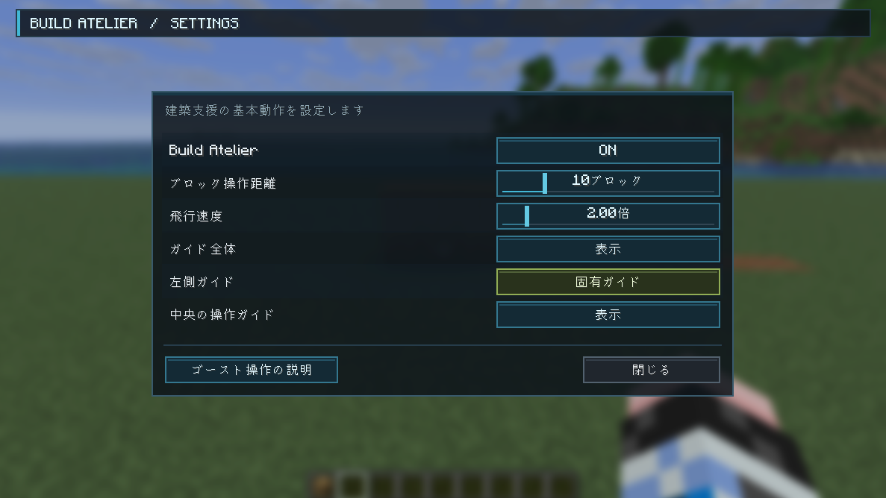
| Build Atelier | Build Atelier自体のON／OFFを切り替えます。 |
|---|---|
| ブロック操作距離 | ブロックの設置・破壊・使用などが届く距離を調整します。 |
| 飛行速度 | クリエイティブ飛行の速度を1〜10倍に調整します。 |
| ガイド全体 | 操作ガイド全体の表示・非表示を切り替えます。 |
| 左側ガイド | ツール固有の操作を示す「固有ガイド」と、共通操作を示す「共通ガイド」を切り替えます。 |
| 中央の操作ガイド | 画面中央に表示する操作ガイドの表示・非表示を切り替えます。 |
| ゴースト操作の説明 | 配置済みゴーストの高さ表示や管理方法を確認できます。 |
Build Atelierが有効なクリエイティブ飛行中は、移動入力を離したときの慣性を抑え、目的の位置で止まりやすくしています。また、ブロックをすり抜けて移動できるため、建築の内側と外側を行き来できます。
Hで左側ガイドを切り替え、Ctrl＋Hでガイド全体の表示を切り替えます。スニークをCtrlに割り当てている場合、この説明書の共通修飾キーCtrlはShiftに読み替えてください。
※ この説明書は初期キー設定で案内しています。変更している場合は、画面のガイドを優先してください。
範囲選択
範囲選択は、Copy・Move・Stack・Deleteなど、複数のツールで操作対象を指定するための共通機能です。ここではCopyを例に、装飾の付いた壁を使って説明します。範囲を確定した後の処理や、一部のキー操作はツールによって異なります。
まず全体を囲んで面を調整し、前面の装飾を除いた壁をコピーします。その後、元の壁とコピーした壁をまとめて選び、2つを一緒に複製します。
箱で囲まず、つながったブロックをクリックして選びたい場合は、連続選択へ進んでください。同じ壁から、枠・壁・窓だけを選ぶ例を紹介します。
1. Copyを選び、2つの角で囲む
左Altでツール一覧を開き、Copyを選びます。
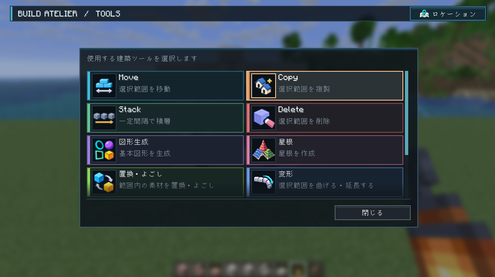
含めたい範囲の一方の角を左クリックしてPos1、反対側の角を右クリックしてPos2を指定します。2点を含む箱型の範囲が選ばれます。最初から細かな装飾まで正確に囲めなくても、次の面調整で広げられます。
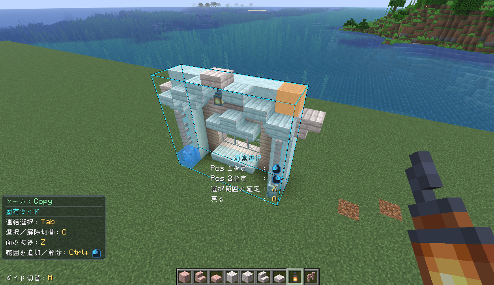
この例では、まだXで確定せず、選択枠を調整します。範囲選択中の右クリックはPos2の指定です。実ブロックの配置は行いません。
2. 選択範囲の面を調整する
枠からはみ出している部分があれば、角を指定し直す代わりに、必要な面だけ動かします。
調整したい面を狙ってZを押します。色の付いた面が操作対象になります。
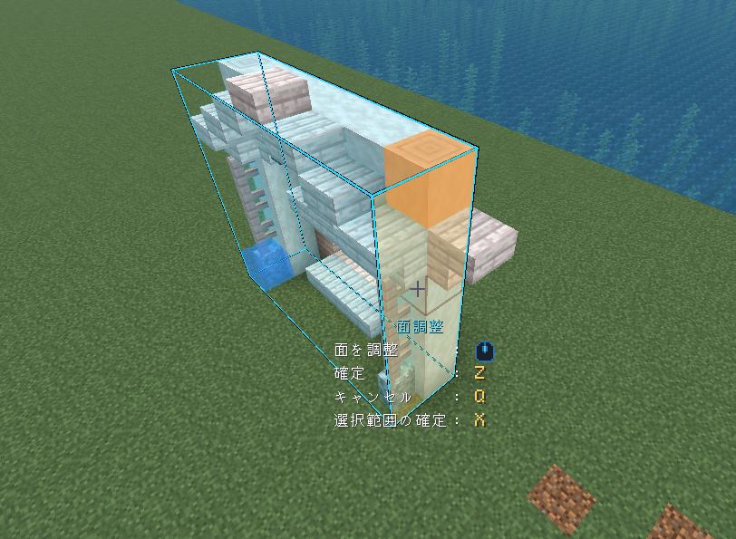
ホイールで、装飾が枠に入るまで面を移動します。側面は上回しで奥へ、下回しで手前へ動きます。上下の面は上回しで上へ、下回しで下へ動きます。
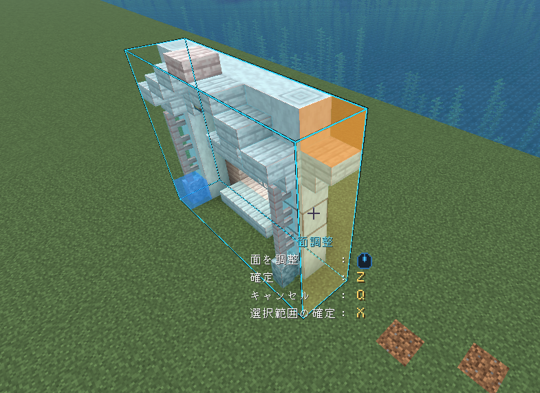
Zをもう一度押して調整を保持し、通常選択へ戻ります。別の面も調整するときは、その面が見える位置へ回り込み、Z→ホイール→Zを繰り返します。
上面・裏側・反対側の確認例を開くを閉じる
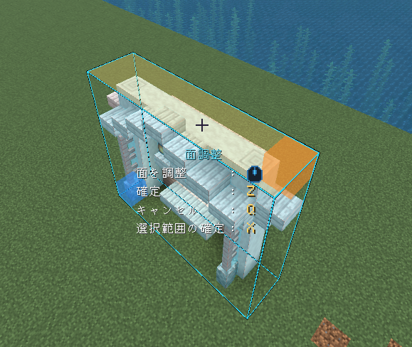
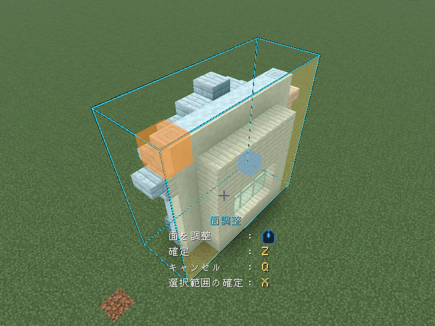
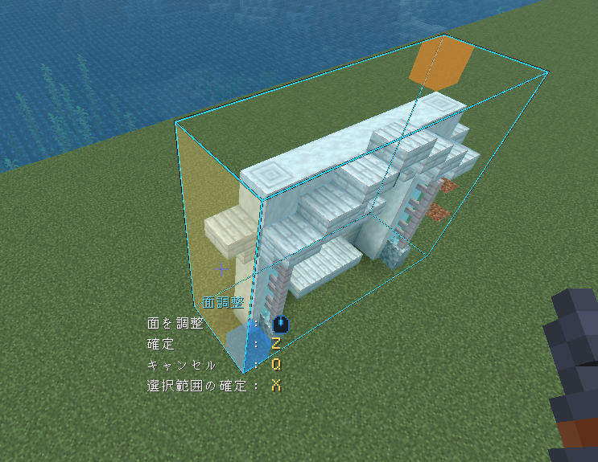
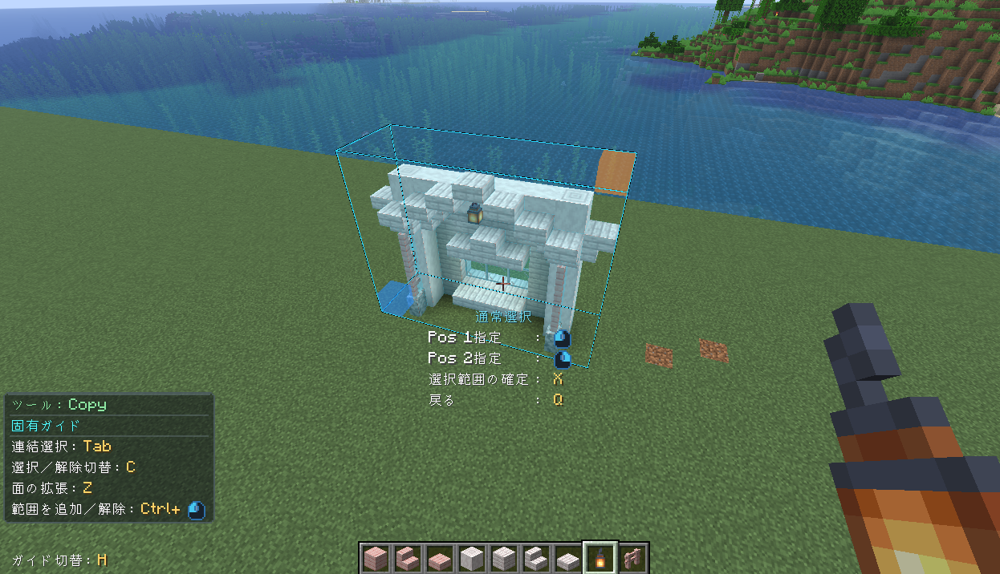
全体をそのままコピーするならXでゴーストへ進めます。この例では、一部を除外するため、まだXを押さずに次へ進みます。面調整中のQは今回の調整だけを取り消します。通常選択へ戻ってからのQはツールを終了します。
範囲の追加・除外
3. コピーしない部分を除外する
選んだ建築の一部をコピーしたくないときは、Cで「通常選択（解除）」へ切り替えます。除外したい部分を含む範囲を操作対象にして、その内側で左クリックしてPos1、右クリックしてPos2を指定します。これは、その範囲で最初の除外を作る手順です。
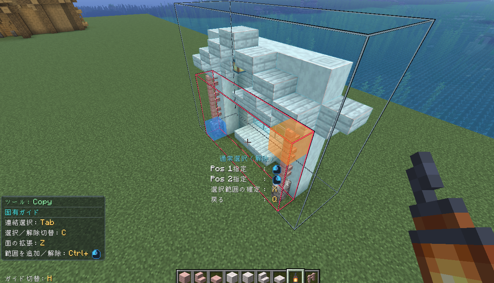
「解除」は選択対象から外す操作です。元の建築のブロックを壊すことはありません。
4. 除外した結果をゴーストで確認し、配置する
Xで選択範囲を確定します。ゴーストを狙って左クリックを長押しし、プレイヤーを移動して元の建築から離します。長押しを解除し、コピーされる部分を見比べてください。
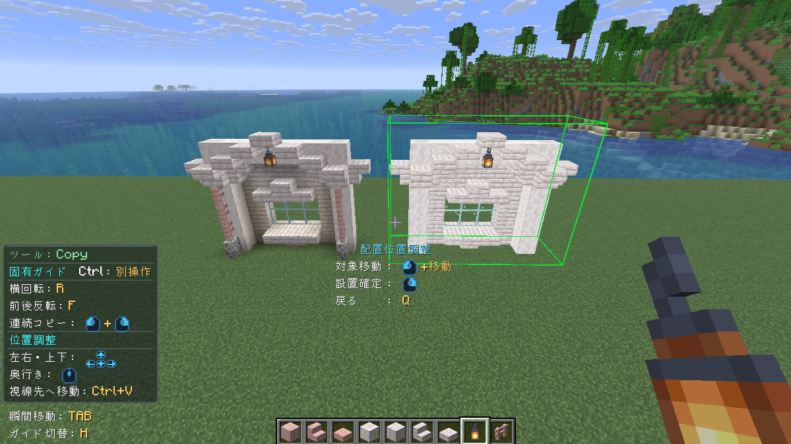
修正したい場合はQで範囲選択へ戻ります。問題がなければ、長押しを解除した状態で右クリックして配置します。
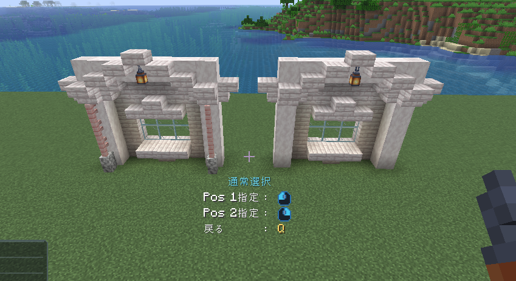
5. 離れた2つの範囲をまとめて選ぶ
続けて、今ある2つの壁を一緒にコピーします。配置完了後は新しいPos1を指定できるので、片方の壁を左クリック・右クリックで囲みます。次に、既存の選択範囲を狙わず、もう片方の壁の角をCtrl＋左クリックして新しい範囲を始め、右クリックで反対側の角を指定します。
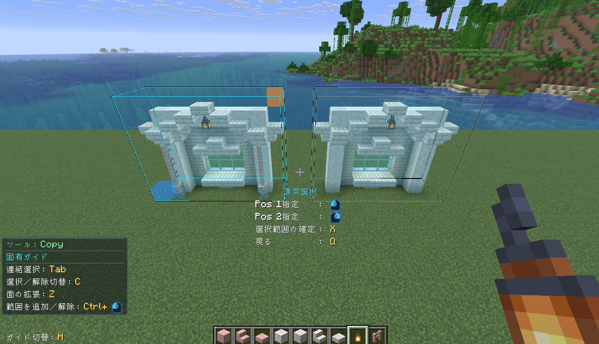
別の範囲を左クリックすると操作対象を切り替えられます。足りない部分はZの面調整で直します。既存の同じ種類の範囲をCtrl＋左クリックすると、その範囲全体を選択から外す操作になるため、追加するときは照準の位置に注意してください。
6. 2つを一緒に移動してコピーする
Xで全体を確定すると、選んだ2つの壁がまとめてゴーストになります。ゴーストを左クリックで長押しし、プレイヤーを移動して空いた場所へ運びます。
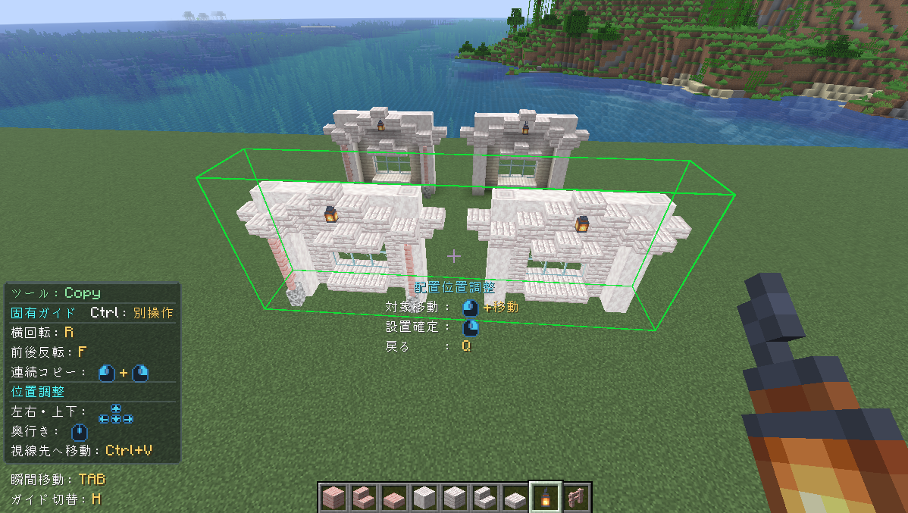
長押しを解除し、右クリックでまとめて配置します。複数の選択範囲から作った1つのゴーストと、Copy中に追加する複数ゴーストは別の操作です。後者は複数ゴーストの説明を参照してください。
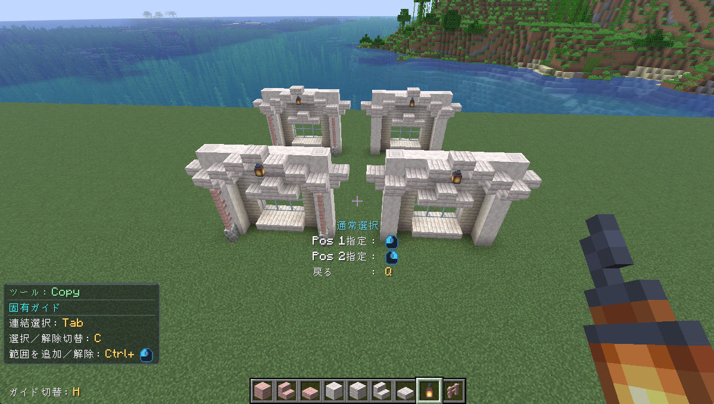
選び直し・取り消し
| 範囲を丸ごと外す | Cで対象の種類（選択／解除）に合わせ、その枠を狙ってCtrl＋左クリックします。親となる選択範囲を外すと、その中に作った除外範囲も一緒に外れます。 |
|---|---|
| 選択編集を戻す | 範囲を編集中のCtrl＋Z／Yは、選択だけを戻す・やり直す操作です。 |
| 配置を戻す | 配置完了後、新しい範囲を選び始める前のCtrl＋Zはワールドの編集を戻します。迷った場合はQでツールを終了してから操作してください。 |
ここまでの例はCopyの通常選択です。Cの役割はツールや状態で異なり、Deleteでは通常選択・円形・四角形の切り替えになります。画面のガイドを確認してください。ドアやベッドなどは確定時に相方が補完される場合があるため、確定後の対象も確認してください。
連続選択：つながったブロックを選ぶ
連続選択は、クリックしたブロックと面でつながる同じ種類のブロックをまとめて選ぶ方法です。Pos1／Pos2を指定する必要はありません。ここでもCopyを例に、装飾の付いた壁から枠・壁・窓を順に選び、必要な部分だけをコピーします。
1. Tabで連続選択へ切り替える
左AltからCopyを選び、範囲選択中にTabを押します。中央の表示が「連続選択」になったことを確認してください。すでに選んだ範囲がある場合、Tabで切り替えてもその選択は残ります。この例を最初から試すときは、前の操作を終えて選択のない状態から始めます。
2. 必要な塊を左クリックで追加する
まず、背面の枠に使われているブロックを1つ左クリックします。同じ種類で面がつながっている部分が、まとめて薄い水色になり選択状態となります。
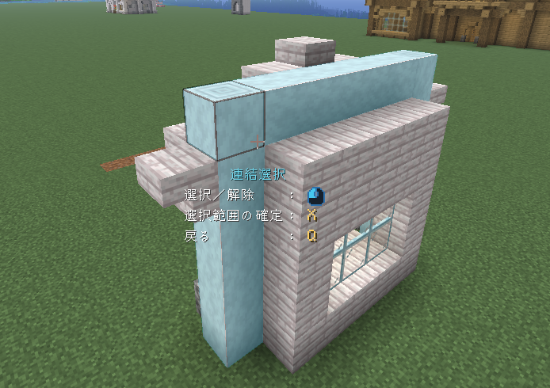
次に、壁に使われているペールオークの板材を左クリックします。先に選んだ枠を残したまま、つながったペールオークの板材が選択に加わります。Ctrlを押しながらクリックする必要はありません。
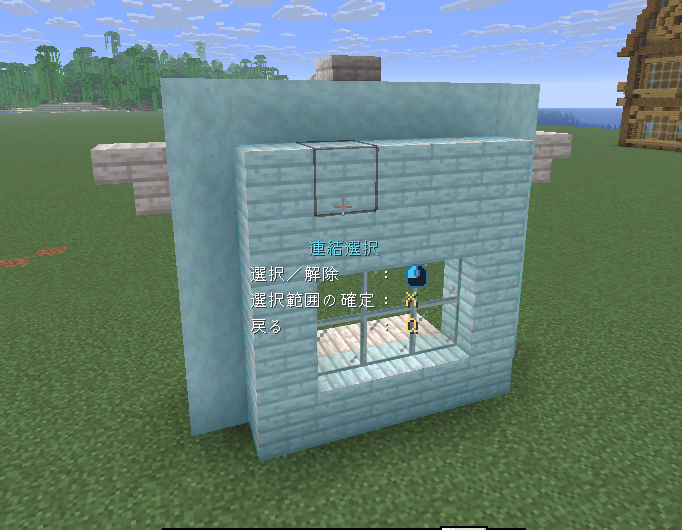
窓も含めるため、ガラスを左クリックします。離れた場所にある同じ種類の塊は自動では選ばれないので、必要ならその塊もクリックしてください。
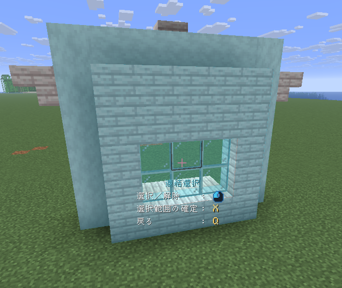
3. 選択した部分を確認し、余分な塊を外す
必要なブロックが選ばれているか、裏側や横へ回り込んで確認してください。
選択済みのブロックをもう一度左クリックすると、そのつながった塊が選択から外れます。直前の選択操作を戻すならCtrl＋Z、やり直すならCtrl＋Yを使います。
大きな塊では、探索や選択状態の表示に時間がかかる場合があります。準備中の通知が出ている間は、完了を待って確認してください。探索中にもう一度クリックすると探索を取り消すため、連打せず通知を確認します。
4. Xで確定し、コピーする部分を確認する
必要な部分を選んだらXで確定します。Copyでは配置用のゴーストへ進むので、ゴーストを狙って左クリックを長押しし、プレイヤーを移動して元の壁から離します。枠・壁・窓が入り、不要な装飾が入っていないかを確認してください。修正が必要な場合はQで選択へ戻ります。
問題がなければ長押しを解除し、右クリックで配置します。
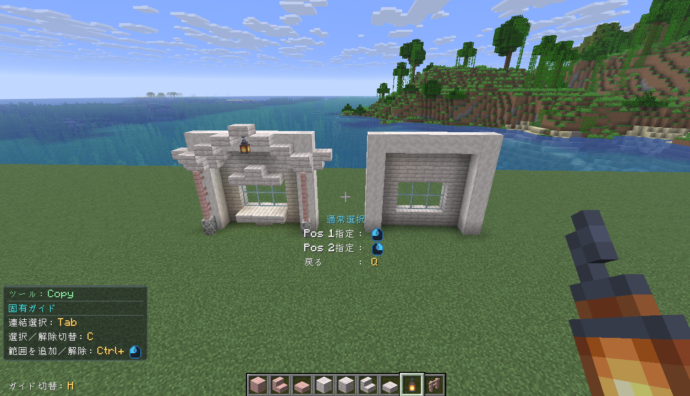
| つながりの条件 | 同じ種類のブロックが面で接している部分をたどります。向きや上下などの状態が違っても同じ種類なら対象になります。斜めだけの接触や、別の種類を挟んだつながりはたどりません。 |
|---|---|
| 選びすぎを防ぐ | 同じ種類の床や隣の建築につながっていると、そこまで選ばれることがあります。クリック後に周囲も見回し、選びすぎていないか確認してください。 |
| 通常選択に戻る | Tabで切り替えます。選択内容は保持されます。連続選択中は通常選択のC・Ctrl＋クリック・Zによる面調整を使わないため、操作方法を混同しないよう中央の状態表示を確認してください。 |
ゴーストの基本操作
ゴーストは、確定する前の配置見本です。Copy・Moveでは次の操作で位置を調整します。建築の参考として保存する「配置済みゴースト」とは区別してください。
| 移動 | ゴーストを狙い、左クリックを長押ししたままプレイヤー自身を移動。長押しを解除すると、その位置を保持。 |
|---|---|
| 微調整 | 左右矢印で左右、上下矢印で高さ。ホイール上で奥、下で手前。 |
| 向き | Rで水平90度回転、Fで前後反転。 |
| 視線先へ移動 | Ctrl＋Vでゴーストを視線の先へ移動します。離れた場所のゴーストを手元へ呼び寄せるときに使います。 |
| 配置 | 長押しを解除してから右クリック。処理完了を待ちます。 |
| 戻る | Qで配置を取り消し、範囲選択へ戻ります。 |
Copy・Move・LibraryのCtrl＋Rは縦90度回転、Ctrl＋Fは上下反転です。向きを変えられないブロックは、その向きのまま配置されます。ドア・ベッド・連結した収納や一部の装飾物がある場合は、縦回転・上下反転ができません。
ドラッグボタンを右に変更した場合、確定ボタンは左になります。Pos1／Pos2のボタンは変わりません。
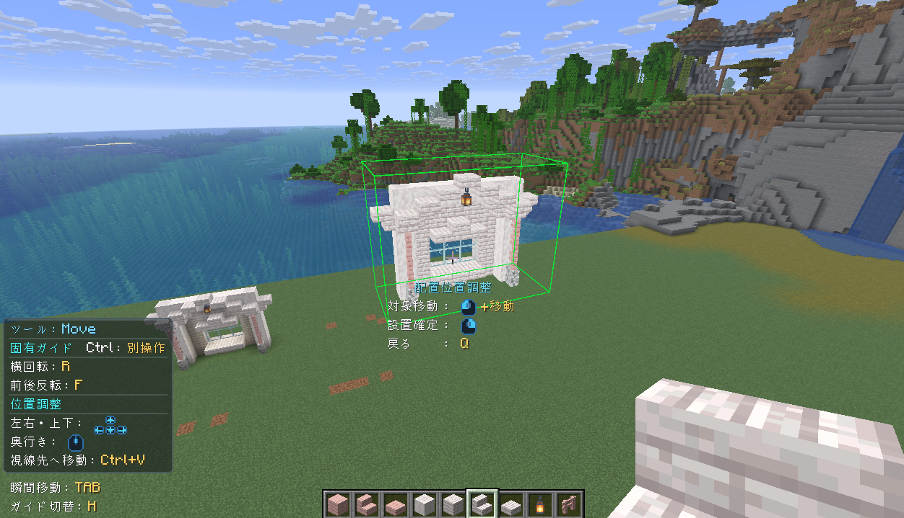
Copy：複製
Copyは、元の建築を残したまま別の場所へ複製するツールです。まずは1棟をコピーし、複数置きたい場合は下の複数の配置候補を作る手順を使います。
1. コピーする建築を選ぶ
左AltからCopyを選び、Pos1・Pos2で建築を囲みます。屋根や装飾まで含まれているか、不要な地面が入っていないかを確認してください。範囲の調整や連続選択は範囲選択で説明しています。
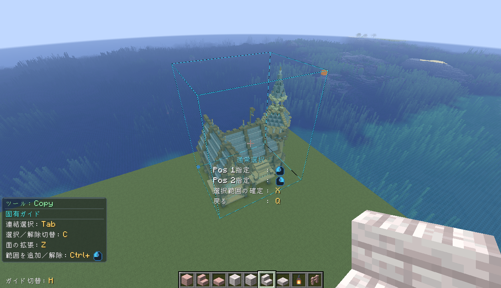
2. ゴーストを移動し、向きを合わせる
Xを押すと、元の建築に重なってゴーストが表示されます。ゴーストを狙って左クリックを長押しし、プレイヤーを移動して目的の場所へ運びます。必要ならRで90度回転し、左クリックを離してから矢印キーやホイールで位置を整えます。詳しい共通操作はゴーストの基本操作を参照してください。
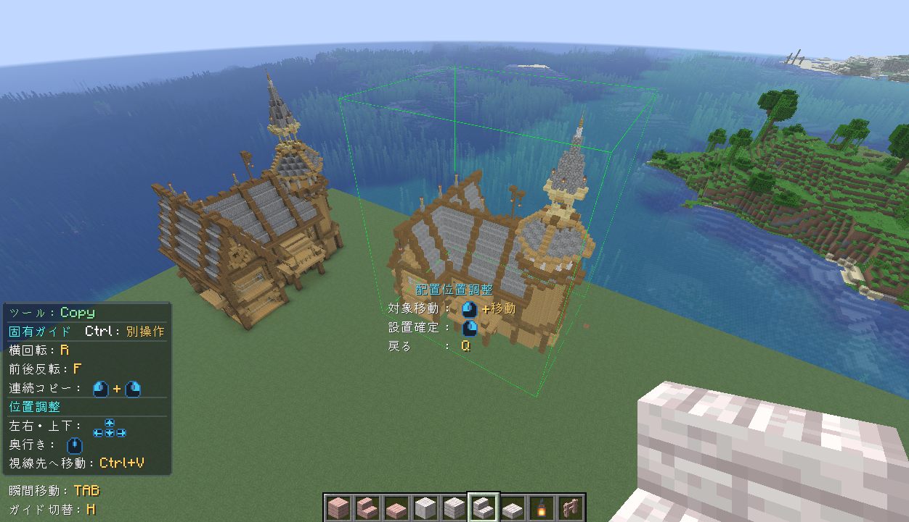
3. 確認して配置する
位置・向き・地面との高さを確認し、左クリックを離して右クリックします。処理が完了すると実際のブロックが配置され、新しいPos1を指定する状態に戻ります。複数の候補を作る場合は、ここでは配置せず、下の手順へ進んでください。

範囲を修正する場合は、配置前にQで範囲選択へ戻ります。配置した結果を戻す操作はUndo・Redoを参照してください。元の範囲にある空気で複製先のブロックを消すことはありません。まずは建築同士が重ならない空いた場所で試してください。
Copyのゴースト操作：複数の配置候補を作る
同じ建築を何か所かに置きたいときは、配置を確定する前にゴーストを追加します。
複製元を選び直さずに、候補ごとの位置や向きを調整してからまとめて配置できます。
1. 配置候補を追加する
ゴーストを1か所目へ移動し、左クリックを押したまま右クリックします。その位置にゴーストが1つ残るので、左クリックを押したままプレイヤーを移動し、掴んでいるゴーストを次の場所へ運びます。必要な数になるまで繰り返し、最後に左クリックを離します。
この段階では、まだ実際のブロックは配置されません。
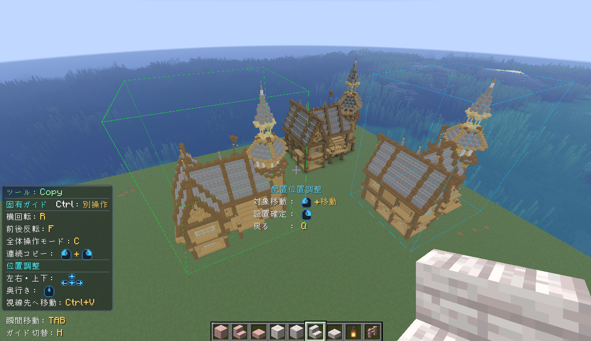
2. それぞれの位置や向きを整える
調整したいゴーストを狙って左クリックすると、そのゴーストが操作対象になります。緑の枠へ切り替わったことを確認し、長押しで移動したり、Rで回転したりします。左クリックを離した後も操作対象は変わらず、矢印キーやホイールで微調整できます。
追加したゴーストを掴んだまま右クリックして、さらに候補を増やすこともできます。
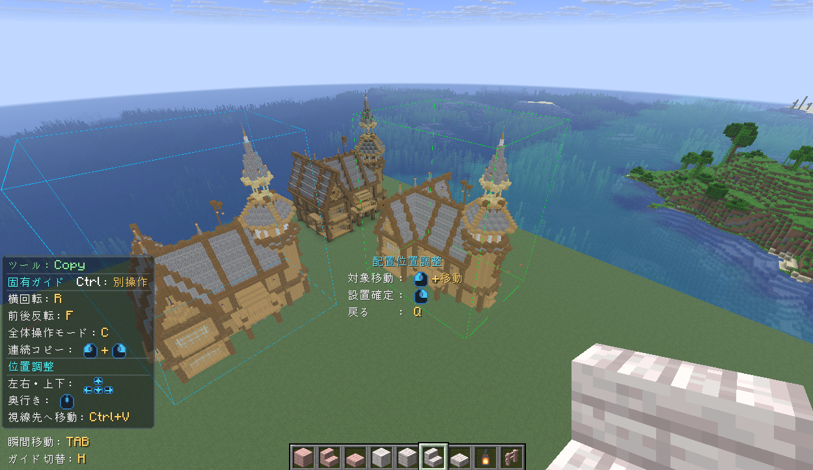
3. 必要なら全体をまとめて調整する
ゴーストが2個以上あるときにCを押すと、個別操作から全体操作へ切り替わります。全体操作ではすべてのゴーストが緑の枠になり、移動・回転・反転がまとめて適用されます。
回転・反転はそれぞれのゴースト自身の中心が基準です。もう一度Cを押すと個別操作へ戻ります。
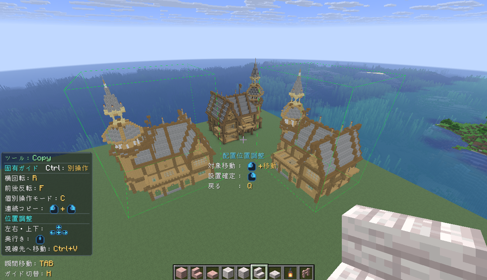
全体操作でも、左クリックを押したまま右クリックすると一式を複製できます。動かしている一式は緑、その場に残した一式は水色で表示され、左クリックを離すと両方が全体操作の対象になります。
4. 確認してまとめて配置する
すべての候補の位置・向き・地面との高さを確認したら、左クリックを離して右クリックします。個別操作・全体操作のどちらでも、表示中の配置候補をまとめて配置します。処理が完了すると、新しいPos1を指定する状態に戻ります。
| 追加した候補を1つ取り消す | 個別操作で、その追加候補を左クリックで掴みながらZを押します。最初のゴーストはこの操作では取り消せません。 |
|---|---|
| 範囲選択へ戻る | Qを押します。配置候補は取り消され、選んでいた範囲へ戻ります。全体操作でゴーストを掴みながらZを押した場合も、全候補を取り消して範囲選択へ戻ります。 |
Libraryの配置でも、同じ追加候補の操作を使えます。
Undo・Redo
CopyやMoveなどの配置完了後、新しい範囲を選び始める前、またはQでツールを終了した状態でCtrl＋Zを押すと、直前の編集を取り消せます。Ctrl＋Yを押すと、取り消した編集をやり直せます。
範囲選択中のCtrl＋Z／Ctrl＋Yは、範囲選択の操作を戻す／やり直す操作になります。
ワールドの編集履歴はプレイヤー・ディメンション別に最大20件まで残ります。ワールド・サーバーを終了すると履歴は消えます。
新しい編集を行うと、取り消していた編集をRedoでやり直せなくなります。
他の編集と競合した場合は、通知と対象の状態を確認してください。
Move：移動
Moveは、選んだ建築を元の場所から別の場所へ移すツールです。ゴーストで位置を調整している間は元の建築が残り、配置を確定したときに移動します。ここでは、左右の塀を残して中央の門だけを移動します。
1. 移動する部分を選ぶ
左AltからMoveを選び、移動したい部分を選択します。この例では、門を囲み、残したい左右の塀を範囲から外します。選び方や範囲の調整は範囲選択を参照してください。
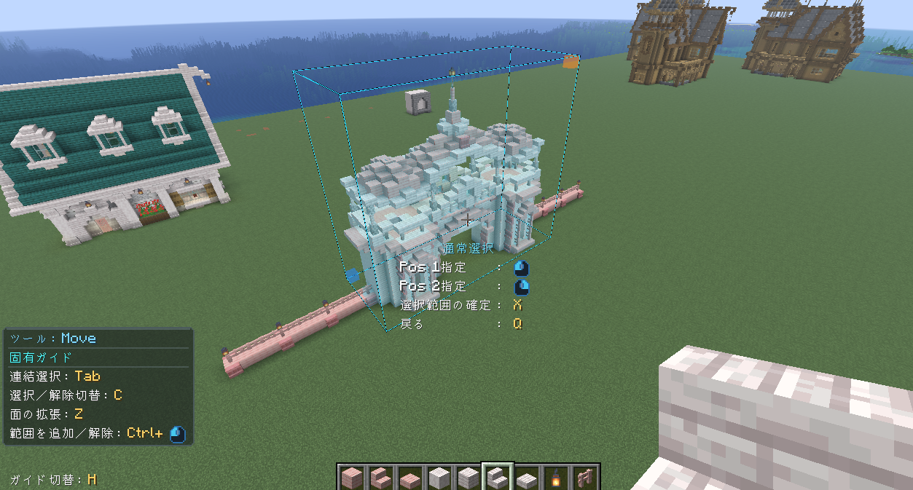
2. 移動先をゴーストで確認する
Xで確定し、ゴーストを左クリックで長押しして移動先へ運びます。位置の微調整や回転・反転はCopyと共通です。詳しくはゴーストの基本操作を参照してください。
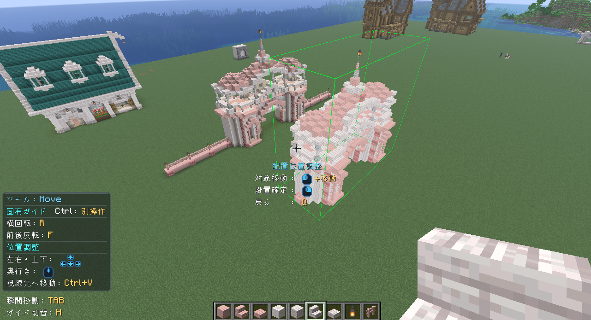
移動する部分や位置を確認し、範囲の修正が必要な場合はQで範囲選択へ戻ります。配置を確定するまでは、実際の建築は移動しません。
3. 確定して移動する
位置・向き・地面との高さを確認したら、左クリックを離して右クリックします。処理が完了すると、選んだ門が元の場所から移動先へ移り、新しいPos1を指定する状態に戻ります。

選択内の空気に対応する移動先のブロックは残ります。ただし、移動する実ブロックと重なる移動先のブロックは置き換わるため、周囲との重なりを確認してください。移動した結果を戻す操作はUndo・Redoを参照してください。
Stack：繰り返し配置
Stackは、選択した壁・柱・床などを、元の建築を残したまま繰り返し配置するツールです。横・高さ・奥行きへ並べられ、先端の位置を調整すると段差のある並びも作れます。
繰り返す単位を選ぶ
左AltからStackを選び、繰り返す部分を選択してXで確定します。通常の追加間隔は選択範囲の幅・高さ・奥行きで決まります。範囲の指定方法は範囲選択を参照してください。
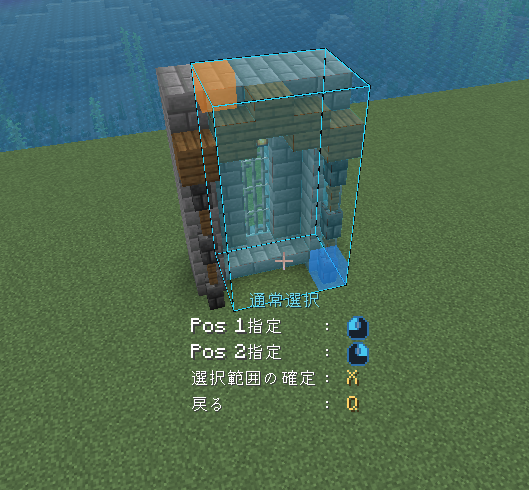
並べる方向と個数を調整する
| 左右矢印 | 視点に対する左右へ複製を増減します。 |
|---|---|
| 上下矢印 | 高さ方向へ複製を増減します。 |
| ホイール | 上で視点の奥、下で手前へ複製を増減します。 |
| 左クリック長押し＋移動 | ゴーストを掴んでプレイヤーを移動すると、選択範囲の寸法ごとに並びを伸縮します。 |
伸ばした方向と逆の操作で、追加した複製を減らせます。横へ並べた状態から高さや奥行きにも伸ばせます。通常のStackでは、画面右側に高さ・横・奥行きの個数が表示されます。
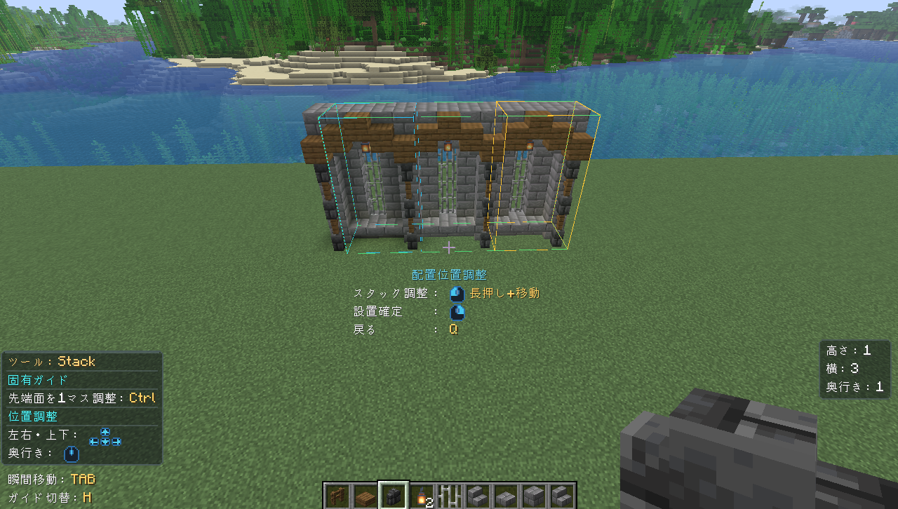
配置を確定する
右クリックでプレビューの複製をまとめて配置します。ドラッグ中は左クリックを離してから確定します。完了後は新しいPos1を指定する状態に戻ります。確定前にQを押すと配置候補を取り消し、選んでいた範囲へ戻ります。

先端をずらして段差を作る
複製がある状態でCtrl＋矢印／ホイールを使うと、金色で示された先端の列・層全体を1マスずつ移動できます。Ctrlを押しながら先端を左クリックで掴み、プレイヤーを移動する方法でも調整できます。表面だけを変形するのではなく、先端の複製全体の位置をずらします。
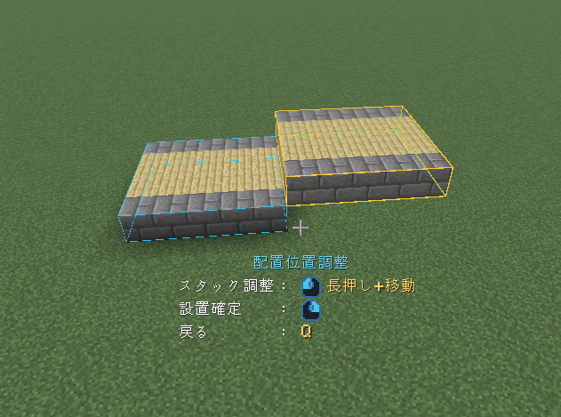
Ctrlを離して長さ方向へ追加すると、調整した先端から並びが続きます。追加と先端の調整を繰り返すことで、高低差のある道などを作れます。列を減らすときはCtrlを押さずに逆方向へ操作します。Ctrl中の逆操作は、先端の位置を戻す操作です。
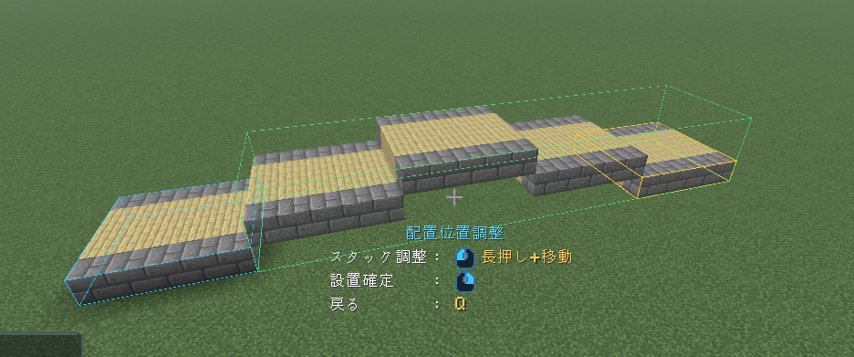
段差を付けた後でも、長さと別の方向へ通常操作で幅や高さを増やせます。調整は段差を含む全長に適用されます。
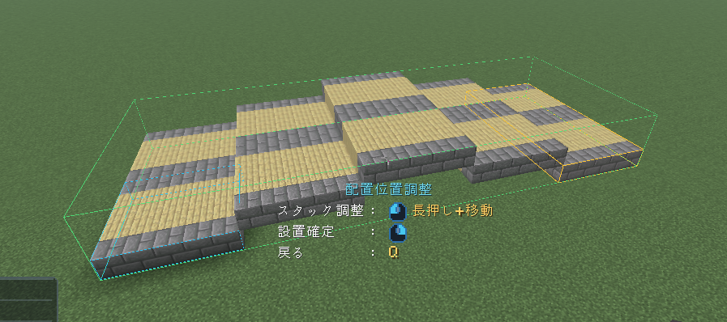
先端の調整では、直前の列から完全に離すことや、角1点だけでつなぐことはできません。また、長さ方向では通常の配置位置より元側へ詰められません。Ctrlで段差調整を始めた後は、右側の個数表示は非表示になります。
処理上限は、元の選択マス数（空気を含む）×複製数で、標準設定では100万マスです。サーバー管理者がこれより小さく設定している場合もあります。確定した一括配置は1回のUndo・Redoの対象になります。
Delete：削除
Deleteは、選んだ範囲のブロックをまとめて削除するツールです。建築全体などを指定する通常選択と、輪・囲い・穴などの形を作って削除する円形／四角形を使い分けられます。
通常選択で削除する
1. 削除する範囲を選ぶ
左AltからDeleteを選び、Pos1・Pos2で削除したい部分を囲みます。範囲の調整や連続選択は範囲選択を参照してください。残す建築や地面が含まれていないかを確認します。DeleteのCは、選択／解除ではなく、通常選択・円形・四角形の切り替えです。
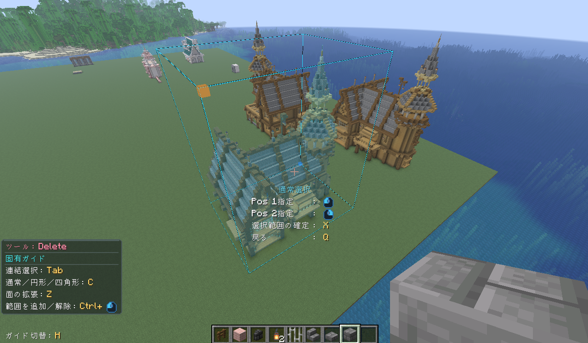
2. 削除前に対象を確認する
Xで選択を確定すると、削除前の確認に進みます。この時点ではブロックは削除されません。範囲を修正する場合は、削除を確定する前にQで範囲選択へ戻ります。
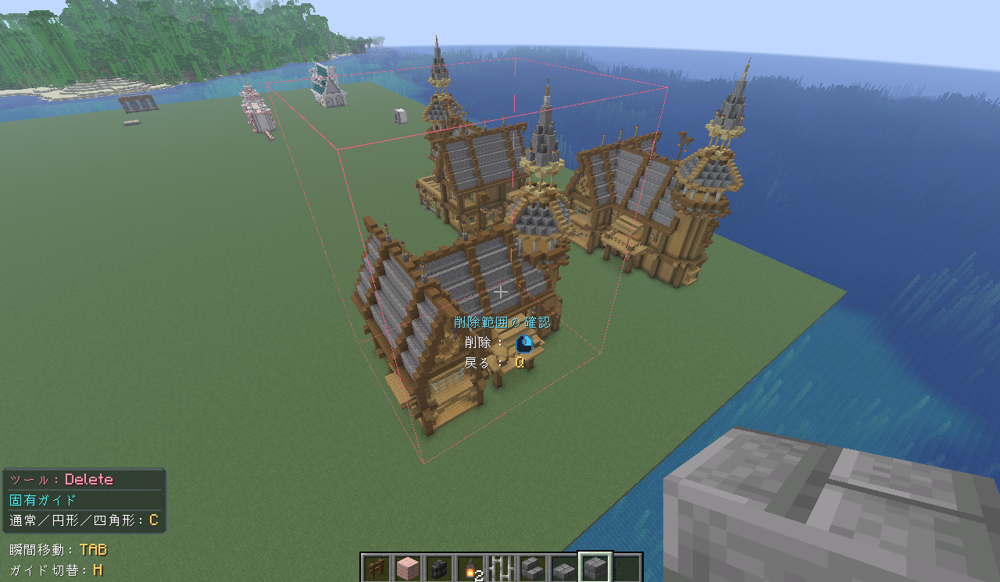
3. 削除を確定する
右クリックで削除し、処理の完了を待ちます。通常選択の削除が完了すると、新しいPos1を指定する状態に戻ります。
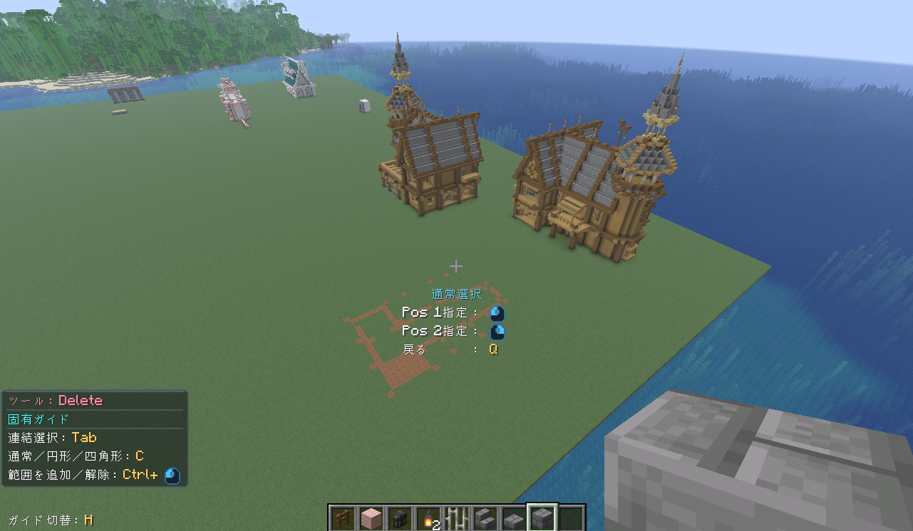
円形・四角形で削除する
DeleteでCを押すと「通常選択 → 円形 → 四角形 → 通常選択」の順に切り替わります。円形／四角形ではPos1・Pos2を使わず、表示された図形の位置・大きさ・厚さを調整します。通常選択から図形へ切り替えると、選んでいた範囲は解除されます。円形から四角形へ切り替えた場合は、位置・寸法・輪郭幅を引き継ぎます。
1. 外側の大きさを決める
面を調整していない状態でホイールを操作すると、幅と奥行きが同じ量ずつ変わります。円形は輪、四角形は枠の形から始まり、中央の穴にあるブロックは削除対象になりません。
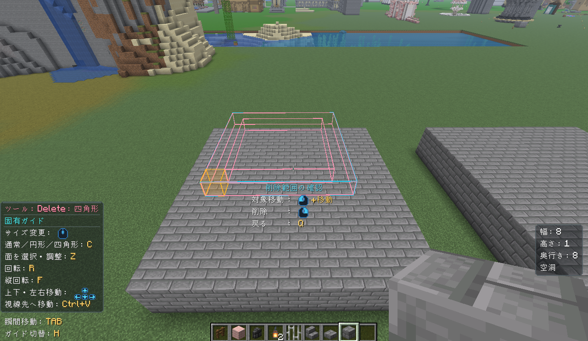
2. 削除する厚さを調整する
厚さ方向の面を狙ってZを押し、ホイールでその面を伸縮します。水平な図形なら上面・下面を指定し、削除する深さや高さを調整できます。Zで調整を確定し、Qでその面の調整前へ戻ります。
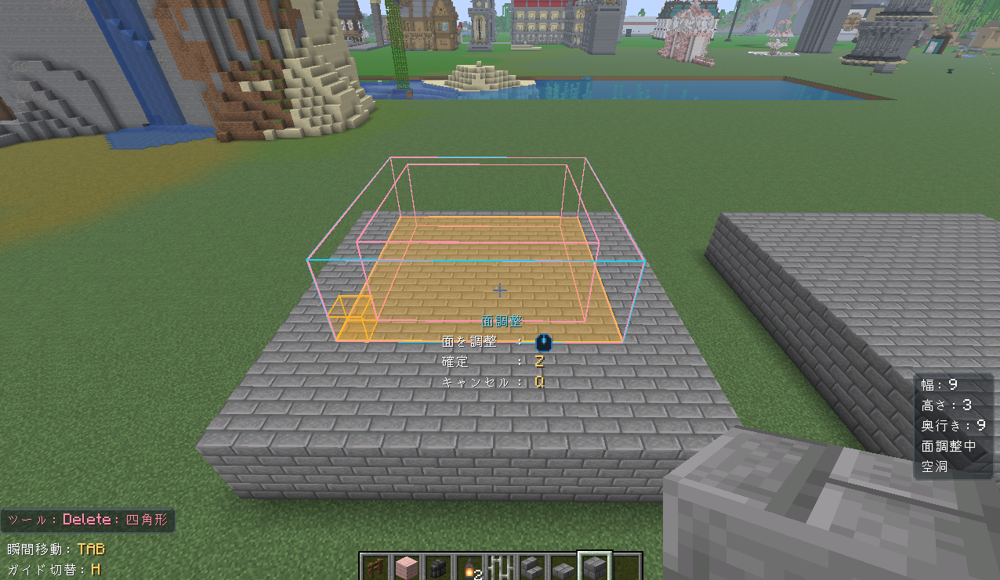
3. 輪郭の太さ・残す穴・縦横の寸法を調整する
側面を狙ってZを押すと、輪・枠の調整に入ります。同じ側面指定でも、ホイールとドラッグで調整する内容が異なります。
| ホイール上 | 輪郭を内側へ均等に太くし、中央に残す穴を小さくします。中心まで太くすると、内側全体が削除対象になります。 |
|---|---|
| ホイール下 | 輪郭幅を戻します。初期の幅を越えて戻すと、外側へ均等に広がります。 |
| 指定面を左クリック長押し＋移動 | 掴んだ側を押す／引くことで、その方向だけを伸縮します。円形は楕円、四角形は長方形にでき、厚さと輪郭幅の設定は保たれます。 |
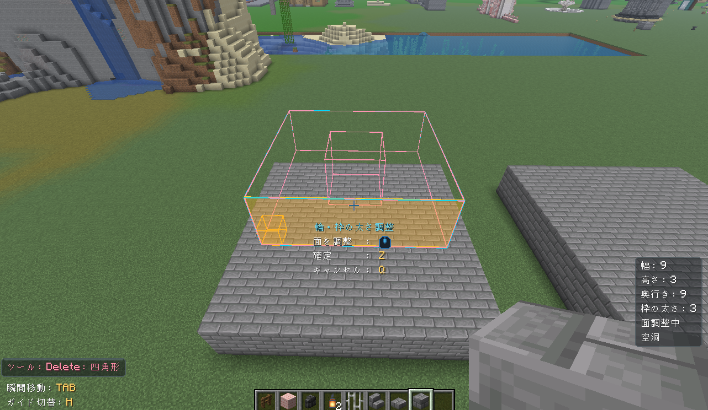
面の調整はZで確定します。Qを押すと、その面の調整開始前へ戻ります。面調整中は削除を確定できないため、Zで調整を終えてから削除します。
4. 対象位置へ合わせる
面調整を終えたら、図形を対象へ重ねて位置を確認します。外枠の内側すべてが削除されるわけではなく、輪・枠の形と重なる部分が対象です。
| 位置 | 図形を左クリックで長押しして移動。矢印キーで左右・高さ、Ctrl＋Vで視線の先へ移動します。 |
|---|---|
| 向き | Rで水平回転、Fで縦回転します。 |
| 大きさの確認 | 画面右側の寸法・厚さ・輪郭幅と、図形がブロックに重なる位置を確認します。 |
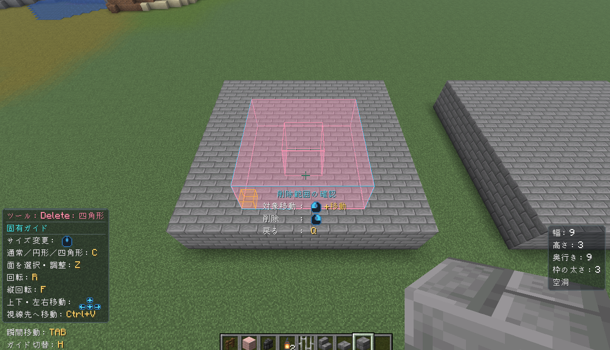
5. 削除を確定する
位置と形を確認し、ドラッグ中は左クリックを離してから右クリックで削除します。円形／四角形の削除が完了すると、Deleteを終了します。削除前にQを押すと、削除せず通常選択へ戻ります。


削除した結果を戻す操作はUndo・Redoを参照してください。1回に削除できる空気以外のブロックは、標準設定で最大100万個です。サーバー管理者がこれより小さく設定している場合もあります。
建材ラック
建材ラックは、素材を探す「ブロック一覧」と、よく使う素材をまとめる「建材セット」を切り替えて使う画面です。Vで開閉し、ラックを開いたまま素材の選択や建築を行えます。以下はBuild Atelierが有効なクリエイティブでの操作です。
ブロック一覧：素材を探す
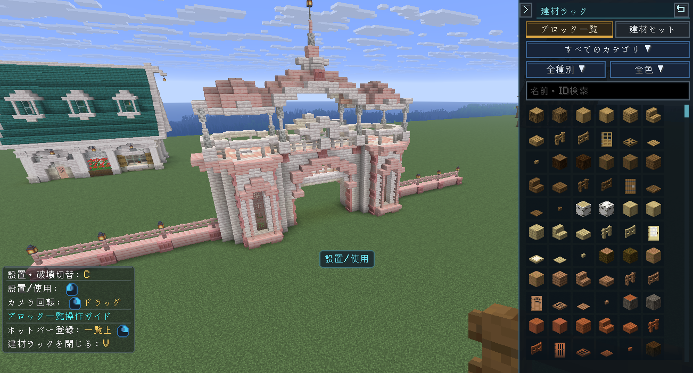
カテゴリ・種別・色を組み合わせ、名前やIDで検索して素材を絞り込みます。プルダウンの各一覧とブロック一覧は、ホイールでスクロールできます。
| カテゴリ | 建築ブロック、自然ブロック、光源ブロックなど、用途や系統から絞り込みます。 |
|---|---|
| 種別 | フルブロック、階段、ハーフ、透過・半透明など、形や性質から絞り込みます。 |
| 色 | 白、灰、茶、青緑など、見た目の色から絞り込みます。カテゴリ・種別と併用できます。 |
| 名前・ID検索 | 素材名またはIDを入力して検索します。検索欄の入力中は、Escで入力を終えてからショートカットキーを使います。 |
| 左クリック | その素材を使用素材として選びます。ホットバーの中身は変更せず、ラックから直接設置できます。詳しくは下のラックを開いたまま建築するを参照してください。 |
| 左上の矢印／右上の初期化 | 矢印でラックを収納・展開します。初期化は絞り込みやスクロール位置を戻し、建材セット側では先頭のセットに戻します。登録したセットや素材は削除しません。 |
探した素材をホットバーへ登録する
ホットバーに入れて使う場合は、一覧の素材を右クリックして登録バーを開きます。ブロック一覧・建材セットのどちらでも使える共通操作です。
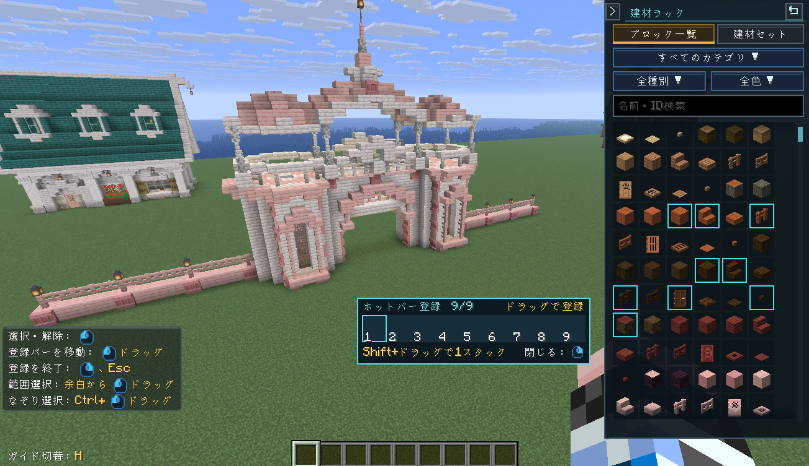
| 素材を選ぶ | 左クリックで選択・解除します。余白からドラッグすると矩形でまとめて選べます。Ctrl＋左ドラッグでは、なぞって追加・解除できます。選択できるのは最大9種類です。 |
|---|---|
| 登録する | 選んだ素材から登録バーのマスへドラッグして離すと、選択順にまとめて登録します。黄色の予告先にある既存アイテムは上書きされます。 |
| 数量 | 通常は各1個、Shiftを押してドラッグを確定すると各1スタックを登録します。 |
| ホットバー内の並べ替え | 登録バー内の素材を別のマスへドラッグすると、実際のホットバーの順番を変えられます。 |
| 登録バーの移動／終了 | 登録バーの枠をドラッグすると位置を変えられます。右クリックまたはEscで登録を終了します。 |
| 履歴 | 所持品への登録・上書き・並べ替えは、ワールドのUndo／Redoの対象外です。 |
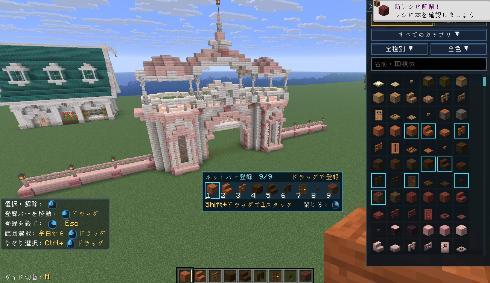
インベントリへまとめて登録する
Eでインベントリを開くと、ラックと並べて素材を登録できます。インベントリ画面でラックを開く場合はVを押します。クリエイティブでは、メイン27枠が表示されるインベントリタブを使います。
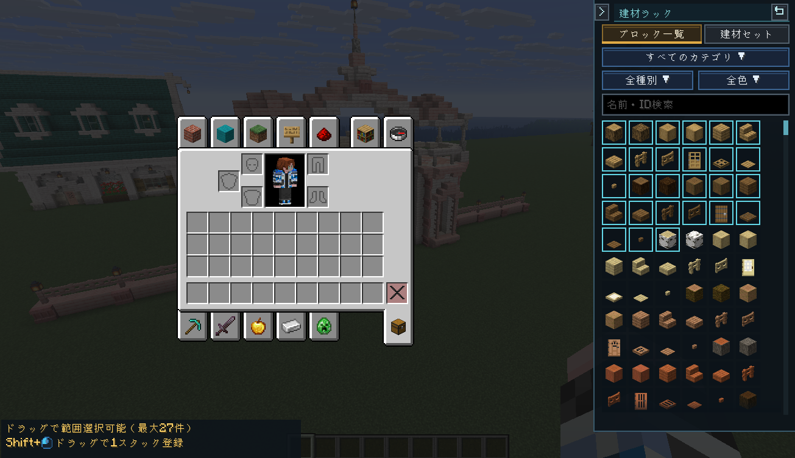
| 複数選択 | ラックの素材を左クリックすると追加・解除します。余白からのドラッグによる矩形選択にも対応し、最大27種類を選べます。 |
|---|---|
| 登録先へドラッグ | 選択済みの素材からインベントリの登録先へドラッグします。メイン収納には選択分を、ホットバーには選択順の先頭9種類までを登録します。登録先から右・次の行へ進み、末尾では同じ領域の先頭へ戻ります。 黄色の予告先にある既存アイテムは上書きされます。 |
| 数量 | 通常は各1個、Shiftを押してドラッグを確定すると各1スタックになります。 |
| 空き枠へ登録 | インベントリ併用中のShift＋右クリックは、選択品をメイン収納の空き枠へ各1個ずつ登録します。未選択ならカーソル下の1種類が対象です。 |
| 併用中の操作 | この状態の左クリックは使用素材の直接選択ではなく、登録する素材の選択です。ワールドへの設置・破壊と手動並べ替えは停止します。所持品の変更はワールドのUndo／Redoの対象外です。 |
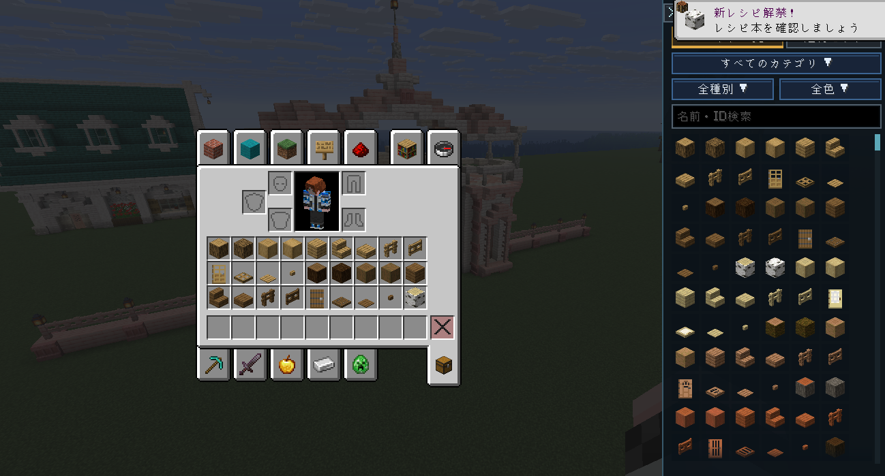
建材セット：作品に使う素材をまとめる
「建材セット」では、作品や用途ごとに素材を保存し、必要なセットを切り替えて使えます。ブロックそのものではなく、使う素材の組み合わせを管理します。
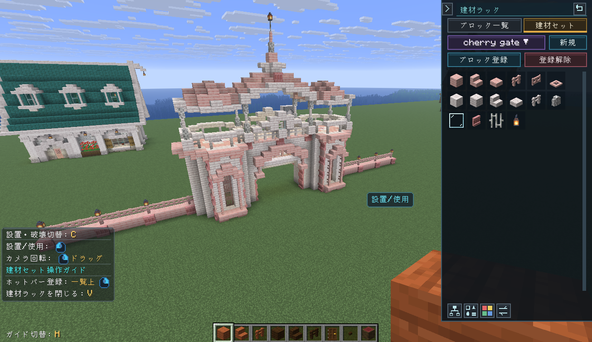
新しいセットを作る
「新規」を開き、建材セット名を入力して「新規作成」を押します。以下は「緑屋根の家」というセットに素材を登録する例です。
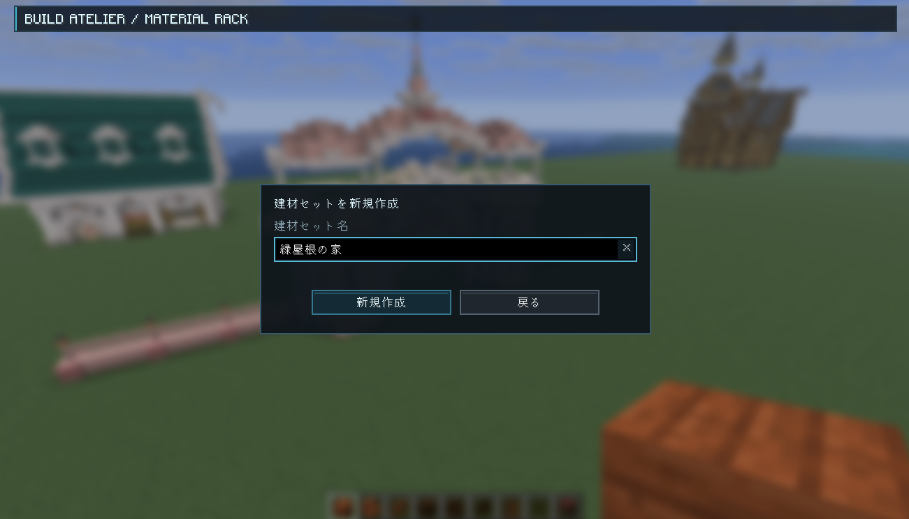
素材を選んで登録する
セットを選んで「ブロック登録」を開くと、登録する素材をブロック一覧から選べます。絞り込みを変えながら複数の素材を選び、下部の「登録」で確認画面へ進みます。
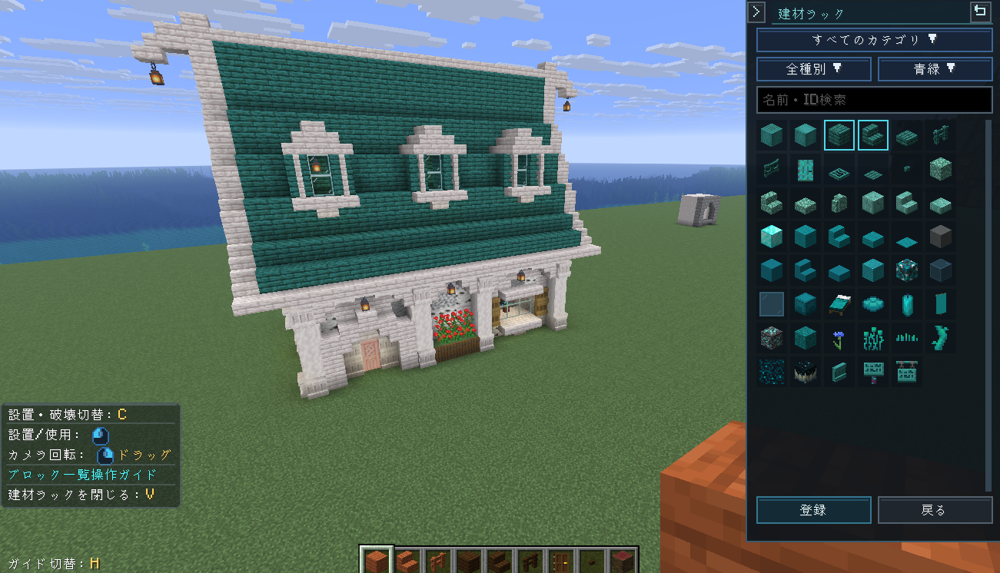
| 絞り込み | カテゴリ・種別・色・名前／ID検索を使います。表示する条件を変えても、それまでに選んだ素材は保持されます。 |
|---|---|
| 選択・解除 | 左クリックで素材を選択・解除します。ドラッグで連続して選ぶこともできます。 |
| 登録／戻る | 「登録」で選択素材を確認します。「戻る」は登録せずに建材セットへ戻ります。 |
| 登録する | 選んだ素材をセットへ登録します。 |
|---|---|
| 選び直す | 一覧へ戻って素材を追加・解除します。選択や絞り込みは保持されます。 |
セットを切り替える・編集する
| セット名のプルダウン | 使うセットを選びます。名前にカーソルを合わせると、セット内の素材をプレビューできます。 |
|---|---|
| 名前の変更／セット削除 | プルダウン内の鉛筆アイコンで名前を変更し、×でセットを削除します。削除前に確認画面が開きます。 |
| 登録解除 | 現在のセットから外す素材を選び、確認画面で解除します。セット内の登録を外す操作で、ワールドやインベントリのブロックは削除しません。 |
セット内の素材を並べ替える
建材セット下部の左から3つのアイコンは、自動並べ替えです。探し方に合わせて素材の順番を変えられます。
| 種類（素材） | 同じ系統の素材をまとめて並べます。 |
|---|---|
| 種別 | ブロック・階段・ハーフなど、形や種類ごとに並べます。 |
| 色 | 見た目の色で並べます。 |
自分で順番を決める場合は、4つ目の「手動並べ替えモード」をONにします。通常の素材選択と、並べ替えの操作を切り替えて使います。
| ONにする | 4つ目のアイコンをクリックします。アイコンが点灯し、「並べ替え中」と表示されます。 |
|---|---|
| 並べ替える | 素材を左クリックで掴み、移動先へドラッグして離します。この間のクリックでは使用素材は変更されません。 |
| OFFにする | もう一度アイコンをクリックします。 通常の左クリックによる素材選択へ戻ります。ラックを閉じた場合もOFFに戻ります。 |
ラックを開いたまま建築する
ブロック一覧・建材セットのどちらでも、素材を左クリックすると使用素材として選択できます。ホットバーの中身を入れ替えずに、ラックから素材を切り替えて使えます。
| ラックの素材を左クリック | ラック側の素材を有効にします。建材セットでは手動並べ替えモードをOFFにして使います。 |
|---|---|
| ホットバーを選択 | 数字キー・ホットバーのクリック・一覧外のホイールでホットバー側へ戻ります。ラックの選択枠は解除されます。 |
| ラック上のホイール | 一覧をスクロールします。使用元はホットバーへ切り替わりません。 |
| ラックを閉じる | Vで閉じるとホットバー側へ戻ります。 |
建材ラックを開いている間も、マウスカーソルを合わせたブロックを対象に、設置・破壊・使用ができます。設置ではカーソルを合わせたブロックの面に素材を置き、破壊・使用ではそのブロックを操作します。
以下の画像にはマウスカーソルが写っていませんが、実際には操作したいブロックへカーソルを合わせています。ラックを開いたまま棚を設置し、Cで破壊モードへ切り替えて取り除く例です。
| 設置／使用 | ワールドの対象を左クリックします。選んだ素材の設置や、対象ブロックの使用を行います。 |
|---|---|
| 設置・破壊の切替 | Cで切り替えます。カーソル横の「設置／使用」「破壊」で現在のモードを確認できます。破壊モードへ切り替えても素材の選択は保持されます。 |
| カメラ回転 | ワールド上で右ボタンを押したままマウスを動かすと視点を回せます。離すとカーソル操作へ戻ります。 |
| 設置を優先 | Shift＋操作ボタンで、対象の使用より設置を優先します。 |
| スポイト | Minecraftのスポイト操作（初期設定はマウス中央）でカーソル先のブロックを取得し、ホットバー側へ切り替えます。 |
| Undo／Redo | ラックを開いたままCtrl＋Z／Ctrl＋Yでワールドの編集を戻す・やり直す操作ができます。詳しくはUndo・Redoを参照してください。 |
この説明は初期ボタン設定です。設置・破壊のカメラボタンを変更している場合は画面のガイドを優先してください。サバイバルでは閲覧用カタログとなり、素材の直接生成・一括登録は使えません。
ライブラリ・部位・素材一覧
ライブラリには建築を作品として保存でき、別の場所への配置、部位ごとの使い分け、素材の置換ができます。左Altのツールメニューから「ライブラリ」を開きます。サバイバルでは、作品を建築の参考となるゴーストとして置けます。
保存・整理 ／ 部位設定 ／ 素材置換 ／ 配置 ／ 素材一覧・集計 ／ 書出・読込 ／ 共有 ／ 参考ゴースト
建築を保存し、作品を整理する
「新規」を押し、保存する建築の範囲を選んでXで確定します。範囲の調整方法は範囲選択と共通です。新規保存画面で作品名を入力し、必要に応じてカテゴリやタグを設定して保存します。
| プレビューを確認 | 左ドラッグで移動、右ドラッグで回転、ホイールで拡大・縮小、Rで初期視点へ戻します。 |
|---|---|
| 作品を探す | 作品名の検索やカテゴリ・タグの絞り込みを使います。 |
| フォルダで整理 | 一覧の右クリックメニューからフォルダ作成や名前変更ができます。作品をフォルダへドラッグすると移動できます。 |
| 複数選択 | Shiftで範囲選択、Ctrlで個別に追加・解除できます。複数の作品をまとめて移動・書出する場合に使います。 |
| 削除 | 一覧の「削除」は、確認後に作品を完全に削除します。ワールドのUndoでは戻せません。 |
フォルダの作成・移動例を見る
部位を設定する
作品を選んで「編集」→「部位設定」を開くと、屋根や窓装飾などを名前付きの部位として分けられます。部位は、配置する部分や素材一覧の対象を絞るときに使います。
「追加」で部位を作り、名前を入力して「割当」を選びます。プレビュー内で対象を選択し「確定」すると、その部位に割り当てられます。続けて追加・解除を行い、編集を終えたら「完了」で部位一覧に戻ります。
| 個別 | ブロックをクリックして選択・解除します。Ctrl＋左ドラッグで複数のブロックをなぞれます。 |
|---|---|
| 同種 | クリックしたブロックと同じ種類をまとめて選択します。 |
| 連結 | 同じ種類で面がつながっているブロックをまとめて選択します。 |
| 直方体 | 左クリックでPos 1、右クリックでPos 2を指定します。Zで面の調整を行えます。 |
| 割当／解除 | 「割当」は部位へ登録し、「解除」は部位への割り当てを外します。解除しても、作品そのものからブロックを削除する操作にはなりません。 |
| 表示部位 | 重なって見づらい部位を非表示にして、対象を確認できます。 |
素材を置き換えた作品を作る
作品の「編集」→「素材置換」から、保存した建築の形を利用して素材を変更できます。「元素材を選択」で複数の素材をまとめて選び、素材カードごとに置換先を設定します。操作は通常置換と共通です。この画面で候補を選んだだけでは、ワールドの建築は変わりません。
| 元素材カード | 板材・階段・ハーフブロックなど、カードを切り替えて素材ごとに置換先を設定します。 |
|---|---|
| 設定を取り消す | 「置換をリセット」は選択中の素材の置換先を取り消します。「全てをリセット」は確認後に元素材の選択と置換設定をすべて取り消します。 |
| 新規保存 | 別名の作品として保存します。元の作品を残したまま、素材違いを作れます。 |
| 上書き | 確認画面で確定すると、選択した作品を置換後の内容で更新します。元の作品も残したい場合は「新規保存」を使います。 |
| 設置 | 置換結果を使って配置へ進みます。 |
| 置換できる素材 | 対応する候補だけが表示されます。棚は別の棚への置換に対応し、中身を引き継ぎます。すべての収納ブロックを自由に置き換えられるわけではありません。 |
必要な部位を選んで配置する
作品を選んで「設置」を押すと、配置する部位を選べます。
チェックを外した部位は配置対象から外れます。クリエイティブでは「設置を開始」でゴーストを出し、位置や向きを調整して右クリックで実ブロックの配置を確定します。移動・回転などはゴーストの基本操作と共通です。

| 部位を選ぶ | 設置したい部位にチェックを入れ、プレビューで対象を確認します。 |
|---|---|
| 空気を含める | 対象部位に空気があり、対応する配置条件の場合に表示されます。有効にすると、その空気の位置にある既存ブロックも消えるため、配置先と合わせて確認します。 |
| 配置後に戻す | 配置した実ブロックを戻す操作はUndo／Redoを参照してください。 |
| サバイバル | ライブラリの作品のゴーストを配置し、建築の補助に使用できます。 |
必要な素材を確認・集計する
作品を選んで「素材一覧」を開くと、必要な素材と数量を確認できます。右側の部位を切り替えると、その部分の必要数に絞れます。
| スタック数表示 | 個数とスタック換算を切り替えます。「1s52」は1スタックと52個です。 |
|---|---|
| 素材一覧の出力 | テキスト（.txt）またはExcel（.xlsx）で出力できます。形式と出力先を選びます。 |
| ワールドに表示 | ゲーム画面の右側に素材一覧を表示し、建築しながら必要数を確認できます。 |
| 集計 | インベントリ画面で一覧の「集計」を押し、インベントリ内だけか、設置した収納も含めるかを選びます。 |
「収納込み集計」では、チェスト・樽・シュルカーボックスを選べます。ワールド上の収納を右クリックで選択・解除し、Xで確定します。収納は16個まで選択できます。QまたはEscで戻ります。
| 所持数／必要数・不足数 | 集計後は数量の見出しをクリックして表示を切り替えられます。内容が変わったら再集計してください。 |
|---|---|
| 集計リセット | 集計結果と選んだ収納をリセットします。作品の必要素材一覧は残ります。 |
| 一覧をクリア | 表示対象の素材一覧と集計結果を消します。作品や手持ちのアイテムを削除する操作ではありません。 |
| ワールド表示の切り替え | 一覧の表示・非表示を切り替えられます。集計結果を消す操作とは別です。 |
作品を書き出す・読み込む
「書出」では、作品やフォルダをまとめてライブラリパッケージ（.mbslib）にできます。対象を選んで次へ進み、パッケージ名と出力先を確認して書き出します。別ワールドで利用する作品や、保管用のコピーをまとめるときに使います。
「読込」から.mbslibファイルを選ぶと、収録作品の確認画面が開きます。プレビューと読込内容を確認して実行します。読み込みのために既存の作品を削除する必要はありません。
同じサーバー内で作品を共有する
個人ライブラリで作品を選び「共有する」を押すと、確認画面が開きます。共有先は接続中のサーバーの共有ライブラリです。
共有の確認画面を見る
「共有ライブラリへ」で一覧を開き、作品を選んで「取得する」を押すと、個人ライブラリへ取り込めます。一覧が変わった場合は「更新」を使います。
配置済みの参考ゴースト
サバイバルで作品の「設置」を開くと、参考ゴーストを配置できます。表示する部位と不透明度を決め、「ゴースト配置」でワールドへ進みます。位置と向きを調整し、左クリックの長押しを離して右クリックすると、参考ゴーストをその位置へ固定します。必要な素材を自分で設置しながら建築します。

ゴーストを見ながら建築する
ゴーストへ照準を合わせると、対象ブロックの名前を確認できます。その位置に正しいブロックを正しい向き・状態で置くと、該当部分のゴーストが消えて実ブロックが見えるようになります。異なるブロックや状態で置いた部分はピンクで示されます。
高さごとに表示する
通常プレイで表示中のゴーストへ照準を合わせ、矢印キーで表示する高さを調整できます。下から順に建築する場合に使います。他のツールや画面を操作している間は対象外です。
| → | 高さを区切る表示へ切り替えます。 |
|---|---|
| ↑／↓ | 表示する高さを1段ずつ増減します。 |
| ← | 全体表示へ戻します。 |
| 操作の確認 | Bの「ゴースト操作の説明」からも確認できます。 |
配置済みゴーストを管理する
ライブラリ上部の「配置済みゴースト」を開くと、固定したゴーストを管理できます。
| 目アイコン：表示・非表示 | 一覧の各ゴーストの右側にある目アイコンをクリックすると、そのゴーストだけを表示／非表示にします。もう一度押すと表示を戻せます。 |
|---|---|
| 不透明度 | 実ブロックや周囲の地形が見やすい濃さに調整します。 |
| 位置調整 | 配置したゴーストの位置を再調整します。 |
| 撤去 | 参考ゴーストだけを取り除きます。すでに置いた実ブロックは残ります。 |
材料の準備には素材一覧・集計を利用できます。
図形生成
左Altのツールメニューから「図形生成」を開き、形と素材を選んで配置します。円・球・四角形・立方体をもとに、大きさ、厚さ、空洞／中埋め、全体／半分を調整できます。屋根の操作は屋根を参照してください。
形と素材を選ぶ
形を選ぶと素材画面が開きます。検索・カテゴリ・種別・色で素材を絞り、使うブロックを選びます。素材と寸法を確認して「確定」すると、ワールドにゴーストが表示されます。この段階では実ブロックは配置されません。
| 素材 | 図形生成に対応する候補から選びます。素材によっては向きなども設定できます。 |
|---|---|
| 寸法 | 選んだ形に対応する寸法を指定します。ゴーストを出した後にも調整できます。 |
| 空気を含める | 空洞の内側にある既存ブロックを消して配置したい場合に使います。詳しくは内部のブロックを残す・消すを参照してください。 |
大きさと空洞／中埋めを調整する
通常のゴースト表示中は、ホイールで大きさを調整します。
Cで空洞／中埋めを切り替えられます。円の例では、空洞は輪、中埋めは内側までブロックで埋まった形になります。
| ホイール | 円・球は直径、四角形は平面の幅と奥行き、立方体は3方向の寸法を拡縮します。 |
|---|---|
| C | 空洞／中埋めを切り替えます。面を調整している間は、先にZでその調整を確定します。 |
| 位置・向き | 矢印キーや掴んで移動、Ctrl＋Vで位置を合わせます。Rで水平回転、Fで縦回転します。ホイールは位置移動ではなくサイズ調整です。 |
面を指定して寸法・輪郭を調整する
調整したい面を狙ってZを押すと、その面が強調されます。面調整中のホイールは、対象の面や形に応じて寸法・厚さ・輪郭の太さを変更します。Zで変更を確定し、Qで今回の面調整を取り消します。
| 四角形・立方体の面 | 面を指定してホイールを回すと、その方向を伸縮できます。空洞の四角形の側面は、輪郭の太さの調整になります。 |
|---|---|
| 円・半円の厚さ | 円の平面に垂直な面を指定して、厚さを調整します。縦に回転させた形でも、厚さ方向を伸ばせます。 |
| 空洞の円・四角形の側面：ホイール | 輪郭を均等に太くしたり、外側へ広げたりします。 |
| 空洞の円・四角形の側面：掴んで押し引き | 側面をZで指定したまま、その面を左クリック長押ししてプレイヤーを移動すると、その方向だけを伸縮できます。円は楕円、四角形は長方形になります。反対側と厚さ、輪郭の太さの設定は保たれます。 |
| 押し引きの確定・取消 | クリックを離すと掴み操作を終了します。Zで面調整を確定、Qで面調整前へ戻ります。操作ボタンを変更している場合は、設定したドラッグボタンを使います。 |
| 球・半球 | 面を指定する調整はありません。通常のサイズ調整で大きさを変えます。 |
半分の形・向きを使い分ける
Xで全体／半分を切り替えます。四角形は全体 → 横半分 → 縦半分 → 全体の順です。切り替えた形の厚さや向きを調整すると、アーチやトンネル状の形にも使えます。
内部のブロックを残す・消す
素材画面の「空気を含める」がOFFの場合、空洞の内側にある既存ブロックは残ります。ONの場合は、空洞内部の対象ブロックを消して配置します。中埋めの形ではこの設定は適用されません。
外周に配置するブロックと、内部で削除されるブロックの両方を確認してから、右クリックで配置を確定します。

| 配置を確定 | 通常のゴースト表示へ戻り、右クリックで実ブロックを配置します。 |
|---|---|
| 素材の設定へ戻る | 通常のゴースト表示中にQを押すと素材画面へ戻ります。 |
| 配置後に戻す | 配置と内部の削除はUndo／Redoの対象です。 |
屋根
左Altのツールメニューから「屋根」を開き、作りたい屋根の種類と素材を選びます。種類ごとに形の作り方が異なります。
尖った屋根 ／ 2方向屋根 ／ 4方向屋根 ／ 位置合わせと配置
| 尖った屋根 | 円形の土台から、上に向かって細くなる屋根です。直径・高さ・カーブを調整します。 |
|---|---|
| 2方向屋根 | 矢印キーで断面を作り、奥行きを伸ばします。左右対称と片流れを切り替えられます。 |
| 4方向屋根 | 四辺の囲いを上下・内外へ進めて作ります。正方形だけでなく、長方形の屋根にもできます。 |
尖った屋根：直径・高さ・カーブを調整する
素材を確定すると、屋根のゴーストが表示されます。ホイールで土台の直径を調整し、Zで高さ調整へ切り替えます。高さ調整中はホイールで屋根を伸縮します。
| ホイール | 通常時は直径、高さ調整中は高さを変更します。 |
|---|---|
| Z | 高さ調整の開始・確定に使います。 |
| C | 輪郭のカーブを弱い／強いで切り替えます。同じ直径・高さでも輪郭が変わります。 |
| Q | 高さ調整中は、その調整を取り消します。通常時は素材選択へ戻ります。 |

2方向屋根：断面を作り、奥行きを伸ばす
素材を確定すると、断面を作り始める基準のゴーストが表示されます。ホイールで幅を決め、矢印キーで断面を上下・左右へ伸ばします。ここでの矢印キーは、屋根全体を移動する操作ではありません。
| ホイール：通常時 | 断面の幅を調整します。最初に広げるときの視線で向きが決まります。 |
|---|---|
| ↑／↓・←／→ | 断面の編集位置を1マスずつ進めます。直前と逆の操作で、その1手を戻せます。 |
| Ctrl＋矢印 | 出発位置の配置を飛ばして進みます。既存の実ブロックを消す操作ではありません。 |
| C | 左右対称／片流れを切り替えます。編集している側の断面は保持されます。 |
断面を作った後は、奥行き方向の面を狙ってZを押します。ホイールで奥行きを調整し、Zで断面編集へ戻ります。Qでも断面編集へ戻ります。
Cで「片流れ」にすると、片側の断面を使った屋根になります。左右対称と片流れは、ゴーストを確認しながら切り替えられます。
左右の側面を狙ってZを押すと、内側埋めの調整に入ります。ホイール上で各高さの端から頂点の列へ向かって1列ずつ埋め、下で追加分を戻します。左右対称の場合は両側に反映されます。
4方向屋根：囲いを上下・内外へ進める
ホイールで土台となる囲いを広げ、矢印キーで次の囲いを作っていきます。上へ進める操作と内側へ寄せる操作を組み合わせると、段状の屋根になります。
| ↑／↓ | 現在の囲いから1マス上／下へ進めます。 |
|---|---|
| →／← | 囲いを1マス内側／外側へ進めます。外側へ広げる形も作れます。 |
| 直前と逆の矢印 | 1手戻ります。たとえば↑の直後の↓は、直前の操作の取り消しです。 |
| Ctrl＋矢印 | 出発する囲いの配置を飛ばして進めます。 |
| 枠の色 | 現在の囲いは黄色系、直前の戻り先は水色で示されます。 |
長方形にする場合は、変更したい側面をZで指定してホイールを回します。その面だけを伸縮し、作成した囲いの形を保ちながら全体の幅・奥行きを調整できます。Zで確定し、Qでその面の調整前へ戻ります。
4方向屋根は囲いを配置するため、内部を自動で埋めたり、空気で消したりはしません。ルート編集中のQは素材選択へ戻ります。
位置を合わせて配置する
形が決まったら、屋根全体の位置と向きを合わせます。2方向・4方向屋根の矢印キーは形の編集に使うため、位置合わせには掴んで移動やCtrl＋Vを使います。
| 全体を移動 | ドラッグボタン（初期設定：左クリック）を保持してプレイヤーを移動します。 |
|---|---|
| 視線先へ移動 | Ctrl＋Vで屋根を視線先へ移します。 |
| 向きを変更 | Rで水平に90度回転します。 |
| 配置を確定 | 形の調整を終えて右クリックすると、表示されている屋根を実ブロックとして配置します。 |
| 配置後に戻す | Undo／Redoで配置を戻せます。 |
上記は初期設定の操作です。キーやドラッグボタンを変更している場合は画面のガイドを確認してください。共通操作の詳細はゴーストの基本操作を参照してください。
置換・よごし
「通常置換」は指定した素材を別の素材へまとめて変更し、「よごし」は素材ごとに変更する割合と配分を決めて変化を付けます。
対象を選ぶ ／ 通常置換 ／ よごしの設定 ／ 手動調整 ／ ワールドへ反映
変更する範囲を選ぶ
左Altから「置換・よごし」を選び、変更したい範囲を指定してXで確定します。範囲の調整・追加・除外は範囲選択と共通です。
範囲を確定すると、選択した部分が3Dプレビューに表示されます。上部の「通常置換」「よごし」でモードを切り替えます。
通常置換：素材ごとに置換先を設定する
「元素材を選択」を押し、変更したい素材をまとめて選んで「確定」します。選んだ素材は画面上部にアイコンカードで並びます。
元素材のカードをクリックし、「置換後素材」の枠から置換先を選びます。
別の元素材カードへ切り替えると、それぞれの置換先を設定できます。設定内容はカードを切り替えても保持されます。
| 元素材の一覧 | 画面の大きさに応じて折り返して表示されます。収まらない場合は一覧内を縦にスクロールできます。 |
|---|---|
| 置換をリセット | 選択中の元素材の置換先を取り消します。 |
| 全てをリセット | 確認後、選択中の元素材と置換設定をすべてリセットします。 |
| プレビューの操作 | 左ドラッグで移動、右ドラッグで回転、ホイールで拡大・縮小、Rで初期視点へ戻します。 |
| ワールドへ反映 | 仕上がりを確認して「確定」を押します。 |
よごし：素材ごとに割合と配分を決める
「よごし」に切り替え、「元素材を選択」で変更対象をまとめて選びます。
元素材カードを1つ選び、「よごし素材を選択」でその素材に混ぜるブロックを指定します。別の元素材カードでも同じように設定します。
例えば、石レンガには苔むした石レンガ、石レンガの階段には苔むした石レンガの階段、石レンガのハーフブロックには苔むした石レンガのハーフブロックを指定します。
| 元素材カード | クリックした素材のよごし設定を表示します。よごし先・よごし率・比率は元素材ごとに設定できます。 |
|---|---|
| よごし率（％） | 選択した元素材のうち、変更する割合です。数値欄またはその下のスライダーで調整します。 |
| 比率（合計10） | 混ぜる素材が複数ある場合の配分です。数値欄またはバーで調整すると、合計10になるよう配分されます。 |
| 素材の追加・解除 | 「よごし素材を選択」で複数の素材を選べます。カードの×で外すこともできます。 |
| よごし直す | 選択中の元素材のよごし率と比率を保ったまま、素材の分布を作り直します。ほかの元素材の設定は維持されます。 |
対象は選択範囲内の指定素材です。空気に触れていない内部のブロックも含まれます。
内装を変えたくない場合は、範囲選択で外層だけを対象にしてください。
プレビュー上で手動調整する
元素材カードと、その素材に設定したよごし素材カードを選びます。プレビュー内のブロックにカーソルを合わせて左クリックすると、選んだよごし素材に変更できます。
手動調整の対象は、変更前の素材が現在選択中の元素材カードと同じブロックです。
| 元素材へ戻す | 選択中のよごし素材になっているブロックをもう一度左クリックすると、元の素材へ戻します。 |
|---|---|
| クリックとドラッグ | 左クリックで素材を変更し、左ドラッグでプレビューを移動します。 |
| 手動調整を保持 | ONで「よごし直す」を押すと、手動で変更・復元した箇所を残します。OFFでは、選択中の元素材に対する手動調整もリセットします。 |
確認してワールドへ反映する
仕上がりを確認し、「適用」を押すとワールドへ反映されます。「戻る」またはEscは変更を適用せず範囲選択へ戻ります。適用処理中は完了を待ちます。
配置済みの変更を戻す場合はUndo／Redoを使います。通常置換は「確定」、よごしは「適用」がワールドへ反映する操作です。
変形
変形は、選択した建築そのものを曲げる「元変形モード」と、元を残して追加区間を作る「延長変形モード」を使い分けます。道路のカーブや坂に加え、厚みのある柱や中空の構造も変形できます。
変形する範囲を選ぶ
左Alt →「変形」から対象範囲を選び、Xで確定します。範囲の指定・調整は範囲選択と共通です。道路の場合は床だけでなく、縁取りも含めて選ぶと一緒に曲げられます。
確定するとゴーストと操作点が表示されます。
元変形：端・中間・高さを調整する
動かしたい端の操作点に照準を合わせ、左クリックを長押ししたままプレイヤーを移動します。反対側の端を基準にして曲がり、ボタンを離すとその形を保持します。離した時点ではワールドへの配置は行いません。
中間の操作点では、両端を残して途中の形を調整できます。長い範囲では中間点が複数表示され、それぞれを動かせます。端を曲げた後に中間を調整することもできます。
操作点を掴んだまま飛行で上昇・下降すると、高さも調整できます。端を上下すると勾配が付き、中間を上下すると両端の高さを残した起伏になります。
| 操作点以外を掴む | 元変形モードでは、ゴースト全体を移動できます。移動・微調整の基本はゴーストの基本操作を参照してください。 |
|---|---|
| 操作点をZで指定する | 操作点へ照準を合わせてZを押す方法でも調整できます。編集中はホイール・矢印キーで微調整し、Zで形を保持して編集を終了します。 |
| Qで戻る | 操作点の編集中は、その調整を取り消します。編集中でない場合は、未配置の変形を取り消して範囲選択へ戻ります。 |
形と位置を決め、操作点の編集を終えてから右クリックで配置します。元変形では、選択した元ブロックを変形後の結果で置き換えます。配置済みの変更を戻す操作はUndo／Redoを参照してください。

延長変形：元の建築から追加区間を伸ばす
操作点を編集中でないときにCを押すと、延長変形モードへ切り替わります。元の建築を残し、端の断面から追加区間を伸ばす方式です。
端の操作点を左クリックで掴み、プレイヤーを移動して引き出します。移動方向によって追加区間の長さと曲がりを調整でき、上昇・下降で先端の高さも変えられます。ボタンを離すと形を保持します。
操作点の編集を終えてから右クリックすると、追加区間だけを配置します。元の建築は残ります。確定前にQで範囲選択へ戻ると、未配置の追加区間を取り消せます。

段差補正・断面の向き・上書きを設定する
補助設定の現在値は左側の固有ガイドで確認できます。操作点を離してから切り替え、ゴーストの形を確認します。
| F：段差補正 | 「なし → 階段 → ハーフ」の順に切り替えます。対応する素材では、段差に階段やハーフブロックを補います。 |
|---|---|
| V：端の断面 | 厚みのある立体では「向きを維持／傾ける」を切り替えます。1層の床では表示されません。 |
| R：回転 | 元変形モードの完成形を水平方向に90度ずつ回転します。 |
| X：上書き | 配置先の既存ブロックを上書きするか切り替えます。範囲確定後のXは上書き設定の操作です。 |
段差補正は、坂や起伏のある形を仕上げるための設定です。素材に対応する階段・ハーフがない場合は補正されないため、プレビューで結果を確認します。
端の断面を「向きを維持」にすると断面の向きを保って位置をずらし、「傾ける」にすると曲がる方向に沿わせます。個々のブロックを任意の角度へ回転する機能ではありません。ハーフを含む水平道路では、床の上下の向きを保ち、断面の水平の向きに適用します。
変形対象は外接範囲10万マス以内です。液体・収納ブロック・扉やベッドなどの2ブロック構造、額縁などの装飾物を含む範囲は対応していません。
形のつながりを保てない変形は途中で止まるため、操作点の位置や範囲を調整してください。
通路・水路
通路・水路は、素材と断面を選び、端面を伸ばして経路を作る機能です。直線とカーブをつなぎ、内部を空けた通路や、水・建材を入れた水路を配置できます。
素材・断面・大きさを決める
左Alt →「通路・水路」で外側の壁や床の素材を選びます。円／四角形と全体／半分を指定し、確定すると断面のプレビューが表示されます。「半分」は断面の下半分を使い、上が開いた水路などに使えます。
| ホイール | 延長前は断面の大きさをまとめて調整します。 |
|---|---|
| 側面を見てZ | その面だけを動かして、幅や高さを個別に調整します。上面の調整では上ホイールで上へ伸ばし、下ホイールで縮めます。 |
| Z／Q | 面の調整中はZで形を保持して終了、Qで調整前へ戻ります。 |
| R／F | 延長前の断面を横／縦に回転します。水平な断面を下へ伸ばせば池の形にもできます。 |
位置調整はゴーストの基本操作と共通です。延長後は断面の大きさと全体の回転が固定されます。
直線とカーブをつないで経路を作る
終端の面へ照準を合わせてZを押すと、延長モードに入ります。ホイール、または端面を左クリックで掴んだままプレイヤーを移動する操作で伸縮します。直線モードでは端面に垂直な方向へ伸びます。
延長モード中にCを押すと、変形モードへ切り替わります。長さのある区間はその形で固定され、次の区間を作れます。端面を掴んで横へ移動するとカーブを作り、上昇・下降で高さも調整できます。
Cで直線モードへ戻すと、曲げた区間の先からさらに直線を伸ばせます。直線と変形の切り替えを繰り返して、複数の区間をつなぎます。
| 直前の区間へ戻る | 現在区間を長さ0まで縮め、さらに戻すと直前区間の編集へ戻ります。戻り先の断面は水色で示されます。 |
|---|---|
| Zで延長を終了 | 経路を保持して通常のプレビューへ戻ります。 |
| Qで取り消す | 延長・断面調整中は、そのZ編集を始めたときの状態へ戻ります。通常のプレビューでは素材選択画面へ戻ります。 |
形を確認し、右クリックで通路全体を配置します。通常のプレビューだけでなく、延長モード中でも配置できます。

ふたと充填素材・深さを設定する
Xで「通路・水路の設定」を開きます。作成中の経路と位置は保持したまま、端のふたと内部の素材を変更できます。
「充填なし」「バケツ系」「ブロック素材」から充填対象を選びます。最後に選んだ素材が「充填素材」欄に表示され、対応する上段のボタンが明るい青色になります。「バケツ系」の一覧を開くだけでは、充填対象は変わりません。
| 始端を塞ぐ／終端を塞ぐ | 指定した端を外側と同じ素材で塞ぎます。両端は個別に設定できます。 |
|---|---|
| 充填なし | 通路の内側を空気にします。内側にある既存ブロックも取り除かれます。 |
| バケツ系 | ボタンを押して一覧を開き、水・溶岩・粉雪から選びます。 |
| ブロック素材 | 青氷・マグマブロックなど、素材一覧の建材で内側を埋めます。 |
| 充填する深さ | 各断面の底から何マス埋めるかを指定します。 |
| 適用／キャンセル | 適用は設定をプレビューへ反映します。キャンセルは変更を反映せず戻ります。ここではまだ配置しません。 |
水や溶岩は開いた端から流れ出ます。
留めたい場合は始端・終端を塞ぎます。配置後の流れや周囲への影響はMinecraftの挙動に従います。
「ワールドで深さを指定」を押すと、実際のプレビューを見ながらホイールで深さを1マスずつ調整できます。Qは今回の深さ調整を取り消して設定画面へ戻ります。この状態で右クリックすると、深さの決定と通路全体の配置をまとめて行います。
水路・建材を埋めた通路の配置例


充填素材を建材にすると、同じ経路の作り方で氷のコースや素材を敷き詰めた通路も作れます。外側の素材と充填素材は別々に指定できます。


外側の壁・床、内側のくり抜き、ふた、充填は1回の配置として反映されます。配置後の取り消しはUndo／Redoを参照してください。
Gの建築モード
Gの建築モードは、クリエイティブでBuild AtelierをONにしているときに使えます。普段の設置、狙ったブロックの置き換え、配置候補をつなぐ特殊設置、設置済みブロックのステート変更を切り替えます。
モード切り替え ／ 置き換え ／ 特殊設置 ／ ステート変更
建築モードを切り替える
Gを長押しすると選択メニューが開きます。使いたいカードへカーソルを合わせ、Gを離すと切り替わります。Gの短押しでは、通常建築→置き換え→特殊設置→ステート変更の順に切り替わります。
| 通常建築 | Minecraftの通常の設置・破壊操作を行います。 |
|---|---|
| 置き換え | 狙ったブロックを、手に持っている素材で置き換えます。 |
| 特殊設置 | 配置候補をつなぎ、向きや状態を調整して一括配置します。 |
| ステート変更 | 設置済みブロックを選び、向きや上下などの状態を変更します。 |
特殊設置の未確定候補がある間や処理の応答待ち中は、モードを切り替えられません。Copyなどのツール使用中はツールの操作が優先され、終了すると使用前の建築モードへ戻ります。
置き換え：狙ったブロックを交換する
交換先の素材を手に持ち、置き換えたいブロックを狙って右クリックします。先に壊す操作を挟まず、その位置のブロックを交換できます。
置き換えモード中に通常の設置を行う場合は、Ctrlを押しながら右クリックします。ここでのCtrlは初期設定の共通修飾キーです。スニークをCtrlに設定している場合はShiftを使います。以下の空白移動や選択の追加・解除も同じです。
特殊設置：候補をつないで一括配置する
設置する素材を手に持ち、既存ブロックの面を狙います。最初の候補の位置を確認して右クリックすると、開始位置が固定されます。
開始位置を固定した後は、矢印キーとホイールで配置候補をつなげます。まだ実ブロックは設置されていないため、候補を確認しながら調整できます。
| ←／→ | 左右へ候補を追加します。 |
|---|---|
| ↑／↓ | 上下へ候補を追加します。ハーフブロックは半マスずつ進みます。 |
| ホイール | 上で奥、下で手前へ候補を追加します。 |
| 逆方向へ戻す | 直前の方向にブロックを戻すことで前のブロックの操作に戻れます。 |
| R | 現在の候補を右へ90度回転します。 |
| F | ブロックの状態を切替えます。階段は上下、ハーフブロックは下付き・上付き・二重を切り替えます。 ※状態変化が可能なブロックのみ |
| Ctrl＋矢印／ホイール | 現在の候補を空白にして、移動先へ候補を追加します。 |
| 右クリック／Q | 右クリックで候補を一括配置します。確定前にQを押すと、未確定候補を破棄します。 |
装飾の形に合わせて、途中でR・Fを使い、現在の候補の向きや上下を変更できます。ブロックを置きたくない場合はCtrl＋矢印キー／ホイールで、置かずに次に進めます。
ステート変更：設置済みブロックの向き・状態を変える
ステート変更では、ブロックを置き直さず、選択したブロックの向きや上下などを変更します。左クリックで単体または範囲の始点を選び、右クリックで範囲の終点を指定します。離れた対象はCtrl＋左クリックで追加・解除できます。
| 左クリック／右クリック | 左クリックでPos1、右クリックでPos2を指定します。選択済みの対象を左クリックすると、その範囲を操作対象にします。 |
|---|---|
| Ctrl＋左クリック | 単体や範囲を追加・解除します。選択済みの塊を指定すると、その塊を解除します。 |
| Z＋ホイール | 狙った選択範囲の面を調整します。もう一度Zで面調整を終了します。 |
| R | 選択した対応ブロックを右へ90度回転します。 |
| F | 選択した対応ブロックの状態や上下を切り替えます。 |
| Q | 選択を解除して操作を完了します。ステート変更モードは維持されます。 |
選択確定の操作は不要です。R・Fを押すたびに実ブロックへ反映されます。
Fで切り替わる内容はブロックによって異なります。リピーターは遅延、コンパレーターは比較／減算を切り替えます。操作の取り消し・やり直しはUndo／Redoを参照してください。
ロケーション
ロケーションは、現在地の名前・座標・ディメンション・向き・サムネイルを個人用に保存する機能です。クリエイティブでは登録地点への瞬間移動、サバイバルでは座標メモと目標案内に使えます。
登録 ／ 管理・更新 ／ 瞬間移動 ／ サバイバルの目標案内
現在地を登録する
左Altで開くツール選択画面の右上にある「ロケーション」から、登録地点の管理画面を開きます。サバイバルではTABから座標メモ画面を開けます。
保存したい場所と向きを決め、「新規」→「現在地を登録」を選びます。名前を入力して「登録」を押すと、現在地とその景色が保存されます。
登録地点を整理・更新する
登録地点は、名前やディメンションで検索できます。「新規」からフォルダを作成し、地点のカードをドラッグしてまとめることもできます。フォルダ左側の矢印で中身を開閉します。
| 名前変更 | 選択した地点の名前を変更します。 |
|---|---|
| 現在の位置で更新 | 選択した地点を、今立っている場所と向きで更新します。確認画面で「更新する」を押すまで登録内容は変わりません。 |
| 削除 | 選択した地点やフォルダを削除します。確認画面で対象を確認してから実行します。 |
| フォルダ・並べ替え | カードをドラッグして順序や所属フォルダを変更します。 |
「現在の位置で更新」は、登録済みの座標・ディメンション・向き・サムネイルを置き換えます。地点名は維持されます。「キャンセル」なら変更せず管理画面へ戻ります。
クリエイティブ：登録地点へ瞬間移動する
通常のゲーム画面でTABを押すと、移動用の一覧が開きます。移動したいカードを1回クリックすると、その登録地点へ瞬間移動し、一覧が閉じます。管理画面では地点を選んで「移動」を押す操作も使えます。
移動用の一覧はTABの再押下または右上の×で閉じます。マルチプレイではTABの短押しでロケーション、長押しでMinecraftのプレイヤー一覧を表示します。
範囲選択中など、別のTAB操作が割り当てられている状態ではそちらが優先されます。
サバイバル：座標メモから目標を設定する
サバイバルではTABで座標メモが開きます。登録・整理に加え、選択した地点への目標案内を表示できます。瞬間移動は行いません。
目標は同時に1地点です。設定するとカードに「[目標]」が付き、ボタンが「目標設定解除」に変わります。別の地点を選んで「目標に設定」を押すと、案内先が切り替わります。
画面を閉じると、レティクルの下に目標地点の情報が表示されます。目標の方向へ向くほど文字がはっきりし、違う方向を向くと薄くなります。薄くなっても文字は消えません。
| 目標・座標 | 案内中の地点名と保存された座標を表示します。 |
|---|---|
| 水平距離 | 現在地から目標までの水平方向の直線距離です。道のりの長さではありません。 |
| 高低差 | 高さが違う場合は、水平距離と同じ行に「上へ○m／下へ○m」を表示します。 |
| 方向と文字の濃さ | 水平方向の向きだけで判定します。上や足元を見ても、そのことだけで文字は薄くなりません。 |
| 別ディメンション | 行き先のディメンション名を表示します。この間、方向矢印・水平距離・高低差は表示しません。 |
座標メモを開き直すと、目標のカードが選択され、一覧の表示先頭へスクロールします。フォルダ内の地点なら親フォルダも展開されます。保存した並び順やフォルダ所属は変わりません。
案内を終了するには、目標のカードを選んで「目標設定解除」を押します。ワールドを離れたときも案内は解除されます。保存した地点そのものは残ります。
目標案内はBAのON／OFFにかかわらず、サバイバルで使えます。障害物を避ける経路を探す機能ではなく、目的地の方向を示す目印です。
あたり
あたりは、建築予定の範囲や柱の位置を線と目印で示す機能です。実ブロックを置かずに、建物の大きさ・高さ・配置を検討できます。複数の線や囲いを1つのセットとして保存できます。
作成・大きさ ／ 柱の位置 ／ 追加・複製・複数操作 ／ 保存 ／ 表示・管理
線・囲いを作り、大きさと高さを調整する
左Altのツール一覧から「あたり」を開き、「新規」からあたりの作成へ進みます。保存済みのあたりを調整する場合は、カードを選んで「編集」を押します。
カード右端の目アイコンをクリックすると、そのセットのあたりを表示／非表示にできます。あたり全体の表示は、左Altのツール一覧にある「あたり」カードの目アイコンで切り替えます。詳しくは表示・管理を参照してください。
地面を左クリックして基点を置き、端点や角を左クリックで掴んだままプレイヤーを移動して形を広げます。一方向に伸ばすと線、幅と奥行きを付けると囲いになります。右側の寸法表示で大きさを確認できます。
| 端点・角を掴んで移動 | 線の長さや囲いの幅・奥行きを調整します。 |
|---|---|
| 辺を掴んで移動 | あたり全体を移動します。上辺や縦の辺も同じ操作です。 |
| 矢印キー／ホイール | 矢印で左右・上下、ホイールで前後へ移動します。 |
| Shift＋ホイール | 上回転で高さを伸ばし、下回転で戻します。高さ0は平面になります。 |
| 端点・角を掴んで上下移動 | 底面の位置を保ったまま高さを調整します。上端のポイントからも調整できます。 |
柱の形式・間隔・個別の位置を調整する
Cで柱の形式を切り替えます。囲いでは柱を外側へ出す／戻すを切り替え、直線では反対側へ出す形式も選べます。柱の目印を調整しても実ブロックは配置されません。
Zで柱位置調整へ切り替えます。等間隔に並べる操作と、柱を1つずつ動かす操作を使い分けます。
| ホイール | 柱の間隔を変更します。上回転で間隔を広げ、下回転で狭めます。 |
|---|---|
| Ctrl＋左クリック | 線上に柱の目印を追加します。既存の目印を指定すると削除します。 |
| 柱の目印を左ドラッグ | 狙った柱を線に沿って移動します。視線やプレイヤーの位置を動かして調整できます。 |
| Z／Q | 柱位置調整を終え、あたりの通常操作へ戻ります。 |
追加・複製し、複数のあたりをまとめて動かす
通常の編集中は、空いている地面をCtrl＋左クリックすると線・囲いを追加できます。既存のあたりをCtrl＋左クリックすると、そのあたりを削除します。
複数をまとめて操作する場合はGで複数選択に入り、対象を左クリックして選択します。もう一度クリックすると選択を解除します。Gで選択を終えると、選んだあたりをまとめて移動・回転・複製できます。
| 複数選択中のR／Q | Rは全選択解除、Qは選択を解除して通常操作へ戻ります。 |
|---|---|
| 複数選択を終えてドラッグ | 角を含むどの部分を掴んでも、選択分をまとめて移動します。矢印・ホイールでも調整できます。 |
| 通常操作中のR | 操作対象を右へ90度回転します。複数選択後は選択全体を回転します。 |
| Ctrl＋C | 操作対象を複製し、視線の先へ表示します。複数選択後は選択分をまとめて複製します。 |
| Ctrl＋V | 操作対象を視線の先へ移動します。複数選択後は選択分だけを移動します。 |
| 選択外のあたりを左クリック | そのあたりの単体操作へ切り替えます。 |
| Ctrl＋Z／Ctrl＋Y | 編集中の移動・拡縮・柱編集・複製などを戻す／やり直します。 |
名前を付けて保存する
Xで保存へ進みます。新規作成では名前を入力して「保存」を押します。既存のあたりを編集中の場合は、同じセットへ上書き保存します。保存が完了するとワールドへ戻ります。
通常操作中にQを押すと、今回の作成・編集を破棄して一覧へ戻ります。柱位置調整中や複数選択中のQは、先にその調整・選択を終了します。

保存したあたりの表示・管理
| カードの目アイコン | カード右端の目アイコンをクリックして、そのセットだけを表示／非表示にします。もう一度押すと表示を戻せます。 |
|---|---|
| ツール一覧のあたりの目アイコン | 左Altのツール一覧で「あたり」カードの目アイコンをクリックすると、すべてのあたりの表示をまとめて切り替えます。 全体を非表示にしている間は、各セットを表示にしてもワールドには見えません。表示を戻すと、各セットの表示設定が反映されます。 |
| 編集 | 選択したセットの線・囲い・柱位置を再調整します。 |
| 現在の視点でサムネ更新 | 確認画面で「更新する」を押すと、現在の視点の画像へ差し替えます。あたりの形や位置は変わりません。キャンセルでは画像を変更しません。 |
| 名前・フォルダの整理 | カードの右クリックメニューから名前変更などを行えます。「新規」からフォルダも作成できます。 |
| 削除 | 対象を選んで「削除」を押し、確認画面の対象を確かめて削除します。 |
保存後の黄色の目印も、あたりの線上でCtrl＋左クリックすると追加・削除でき、左ドラッグで線に沿って動かせます。変更は自動保存されます。実ブロックと重なる場所やブロックの背後、他ツールの使用中、あたりの非表示中は操作できません。
困ったときは
操作できないときは、画面の通知と現在の操作状態を確認してください。機能ごとの詳しい操作は、下のリンクから確認できます。
操作がうまくいかないとき
| キーが反応しない | BでBuild Atelier設定を開き、ON／OFFを確認します。文字入力中や別の画面を開いている間は、ワールド内の操作キーが働かない場合があります。キーを変更している場合はゲーム内ガイドを確認してください。 |
|---|---|
| サバイバルで建築ツールを使えない | 建築・編集ツールはクリエイティブで使用します。サバイバルでも座標メモと目標案内は使えます。クリエイティブのロケーションでは瞬間移動ができます。 |
| Ctrlを使う操作が反応しない | スニークをCtrlに割り当てている場合、共通修飾キーはShiftになります。この説明書のCtrlをShiftに読み替えてください。 |
| Undoで選択範囲だけが戻る | 範囲選択中は選択編集のUndoになります。配置完了後、新しい範囲を選び始める前、またはQでツールを終了した状態でCtrl＋Zを押します。詳しくはUndo・Redoを確認してください。 |
| 配置・保存を確定できない | 通知に表示された理由を確認します。処理中なら完了を待ちます。範囲や容量の上限、移動・配置先の未読み込み領域、ワールドの高さや境界を確認してください。 |
| ドアやベッドに関する通知で範囲を確定できない | もう片側を除外しているという通知が出た場合は、その除外を解除してください。 未読み込みや上限超過の通知が出た場合は、対象の周辺が読み込まれるのを待つか、選択範囲を小さくしてから確定し直します。 |
| Deleteなどの処理が中止された | 処理対象が他プレイヤーの編集などで変更され、競合を検出すると、安全のため処理を中止することがあります。通知と対象の状態を確認し、同じ場所を編集しているプレイヤーがいる場合は作業の終了を待ってから操作し直してください。 |
| 大きな選択やプレビューに時間がかかる | 準備中の通知が出ている間は待ちます。連続選択は探索中の再クリックで探索を取り消すため、連打しないでください。扱いにくい場合は建築を部位ごとに分けて操作します。 |
処理上限・注意点
上限はツールや処理内容によって異なります。上限以内でも、建築の内容やPC・サーバーの状況によって処理時間は変わります。
| Copy・Move・ライブラリ保存の外枠 | 幅×高さ×奥行きで数えた外枠の体積は、最大16,777,216マスです。外枠内の空気も体積に含みます。上限を超える場合は、選択範囲を分けて操作してください。 |
|---|---|
| Copyの実ブロック数 | 空気を除いた元のブロック数×複製数が、標準設定で最大1,000,000個です。複数の配置候補を作る場合は、複製数も含めて上限を確認します。 |
| Move・ライブラリ保存の実ブロック数 | 空気を除いたブロック数は、標準設定で最大1,000,000個です。外枠の体積と実ブロック数の両方を満たす必要があります。 |
| サーバー設定・その他の制限 | マルチプレイでは、サーバー管理者が編集上限を標準より小さく設定している場合があります。 シングルプレイでも設定を変更している場合は、その上限が適用されます。ほかのツールには個別の上限があり、ライブラリは保存データの容量制限もあるため、上限の通知が出た場合は範囲や複製数を減らしてください。マルチプレイで上限が分からない場合は、サーバー管理者に確認してください。 |
| ワールドのUndo・Redo | 戻せる範囲や履歴が消える条件はUndo・Redoを確認してください。他の編集と競合した場合は、通知と対象の状態を確認します。 |
| 大きな編集の前に | 重要なワールドはバックアップを残してください。Undoは、編集後に起きた周辺の変化をすべて元に戻すためのバックアップではありません。 |